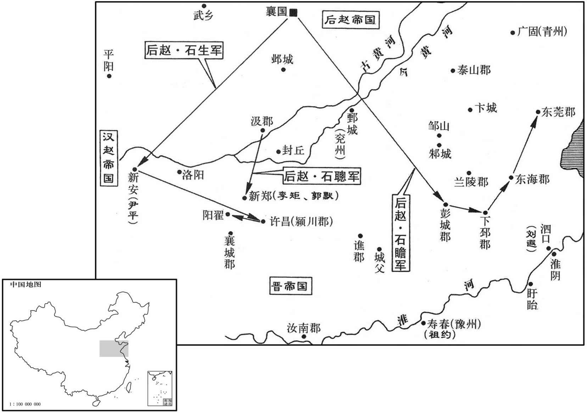
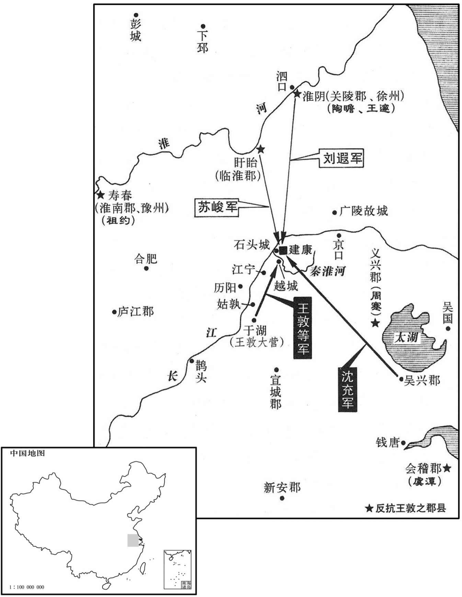
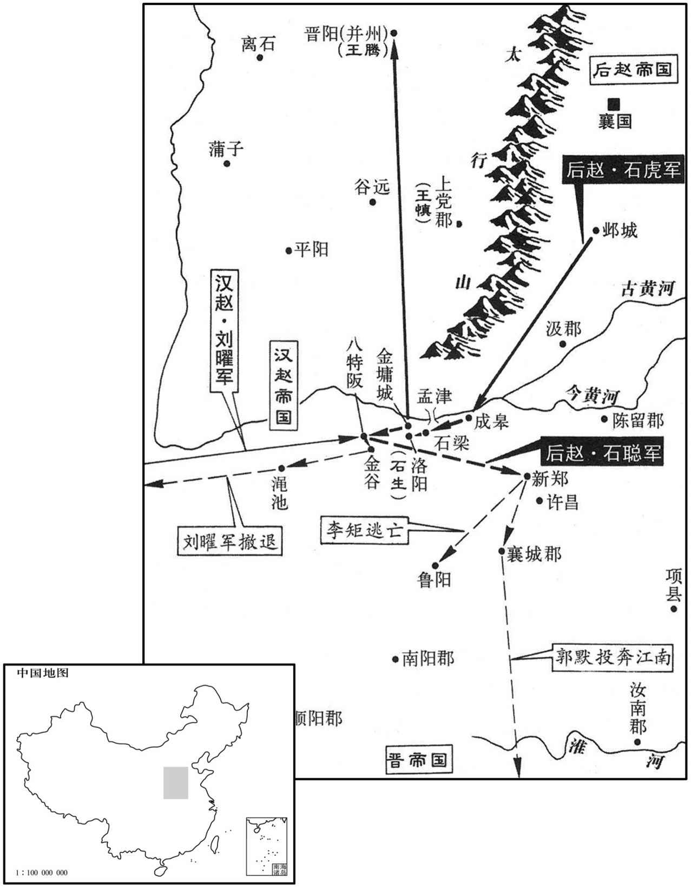
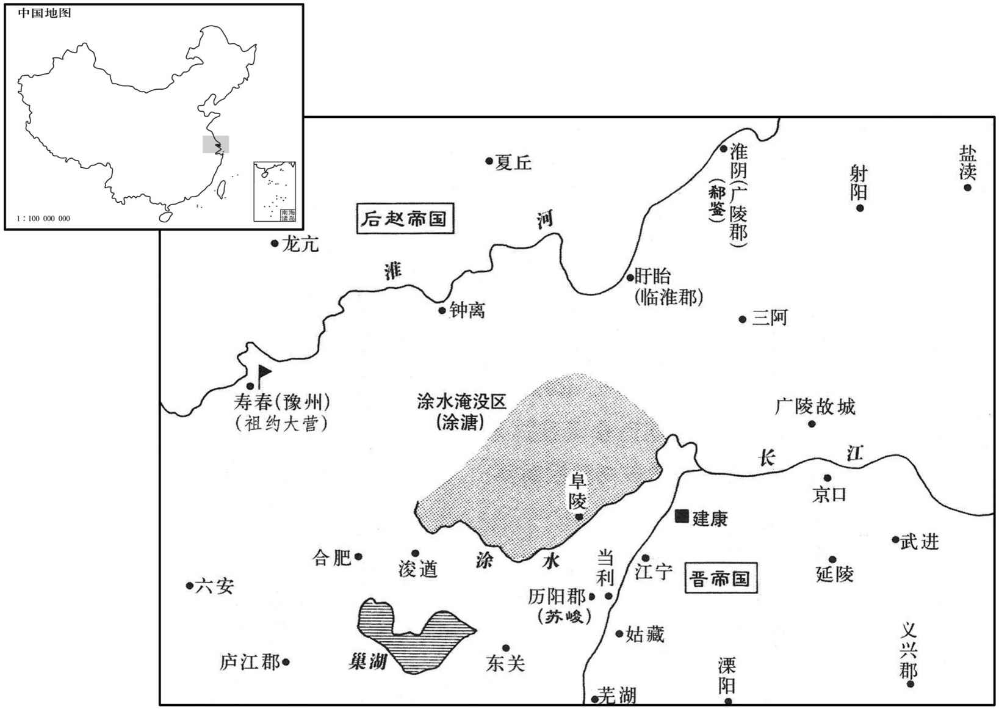
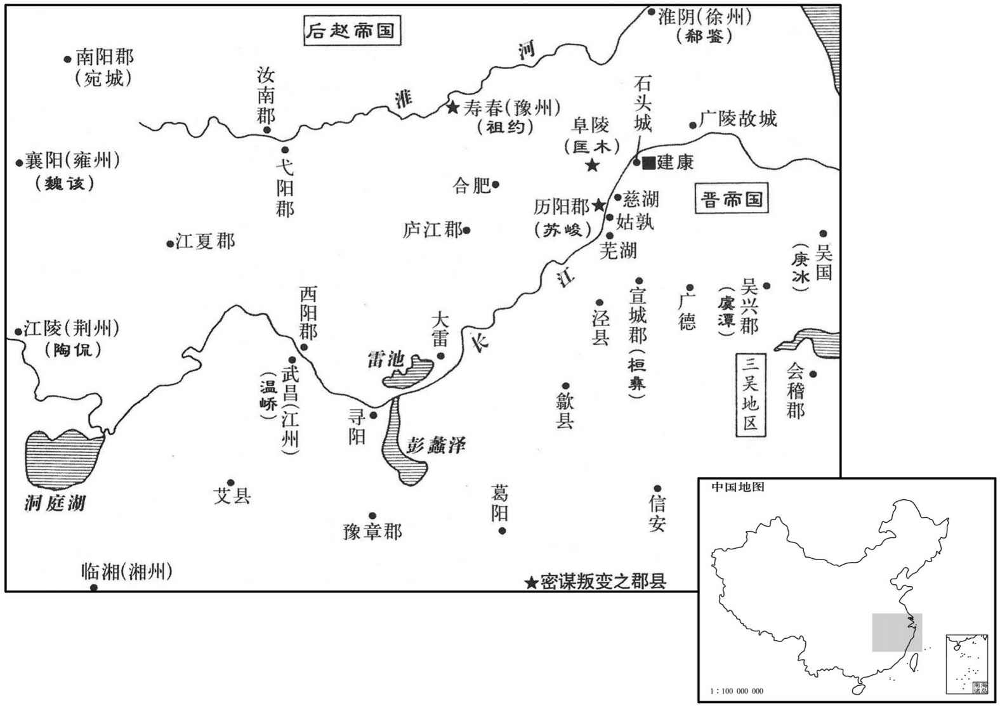

卷次与人物目录 / 卷93
资治通鉴 · 卷第九十三【晋纪十五】
公元324年至公元327年 · 原文、白话与胡三省注
本页按胡注本编排保存全卷内容。白话采用本站所据译本，未可靠对应的内容另列说明；事件标题用于定位，并非原书文字。
本卷共89段原文，88段有译文对应，1段缺译或待核对。
卷第九十三【晋纪十五】起阏逢涒滩（甲申），尽强圉大渊献（丁亥），凡四年。
卷首原文与注释
肃宗明皇帝下
公元324年 · 晋肃宗明皇帝太宁二年
太宁二年〔（甲申、三二四）〕
上传原文的注释括号有异常，字符原样保留；无法可靠划分的段落默认全文显示。
本年事件索引（现代整理）
- 王敦诛杀周嵩、周莚及周札宗族
- 后赵的将兵都尉石瞻侵犯下邳、彭城，攻取东莞、东海
- 后赵司州刺史石生攻击在新安的前赵河南太守尹平
- 石生侵犯许昌、颍川、俘获人众上万
- 李雄立侄李班为太子引发继承争议
- 张茂病重论孝道
- 王敦病情加剧，矫称诏令任王应为武卫将军
- 温峤诈降王敦后回朝告发谋反
- 明帝集结诸军准备讨伐王敦
- 王导诈发王敦丧，朝廷宣布讨逆
- 郭璞卜王敦败亡，被王敦杀害
- 王敦派兵进攻建康，温峤据水拒敌
- 王导送信给王含论民政
- 有人对话
- 明帝出兵南皇堂击败王敦军
- 王敦病死，王应秘不发丧
- 明帝让吴兴人沈桢劝说沈充倒戈，许诺让他出任司空
- 沈充论军事
- 刘遐苏峻援军抵达并击败沈充
- 王含等人烧毁营帐，连夜遁逃
- 王敦余党溃败，沈充钱凤被杀
- 王敦尸体被发掘斩首
- 周抚和邓岳一同逃亡，周光想资助自己的兄长
- 原吴内史张茂的妻子陆氏，倾其家财
- 有关部门奏报进言
- 温峤主张宽免被王敦胁迫的属官
- 任司徒王导为太保，兼领司徒职
- 凉州将领辛晏占据罕县，不听从张骏号令
- 张骏派王骘交聘前赵论礼制
- 这年，代王贺开始亲政

本年形势与背景参考图

本年形势与背景参考图
春，正月，王敦诬周嵩、周莚与李脱谋为不轨，收嵩、莚，于军中杀之；遣参军贺鸾就沈充于吴，尽杀周札诸兄子；进兵袭会稽，〔会，工外翻。〕札拒战而死。
春季，正月，王敦诬陷周嵩、周与李脱勾结，密谋不轨，因而收捕二人，杀害于军中。又派参军贺鸾到吴地找沈充，把周札所有兄长的儿子尽数杀死，随即进兵攻袭会稽，周札抵抗战死。
后赵兵都尉石瞻寇下邳、彭城，取东莞、东海，〔东莞县，汉属琅邪郡；莞，音官。武帝泰始元年，分琅邪立东莞郡。将，即亮翻。〕刘遐退保泗口。〔水经注：泗水自淮阳城东流径角城北，而东南流注于淮，谓之泗口。杜佑曰：泗口，在今临淮郡宿迁县界。〕
后赵的将兵都尉石瞻侵犯下邳、彭城，攻取东莞、东海，刘遐退保泗口。
司州刺史石生击赵河南太守尹平于新安，斩之，〔新安县，汉属弘农郡，晋属河南郡。守，式又翻；下同。〕掠五千余户而归。自是二赵构隙，日相攻掠，河东、弘农之间，民不聊生矣。〔河东，弘农，二赵之界上也。〕
后赵司州刺史石生攻击在新安的前赵河南太守尹平，将他斩首，劫掠民众五千多户返回。自此以后，前赵与后赵结怨成仇，经常互相攻伐劫掠，河东、弘农之间，民不聊生。
石生寇许、颍，〔许昌、颍川，同是一郡地。〕俘获万计。攻郭诵于阳翟，诵与战，大破之，生退守康城。〔魏收地形志，阳翟县有康城。〕后赵汲郡内史石聪闻生败，驰救之，进攻司州刺史李矩、颍川太守郭默，皆破之。
石生侵犯许昌、颍川、俘获人众上万。又进攻在阳翟的郭诵。郭诵与石生交战，重创石生所部，石生退走保守康城。后赵汲郡内史石聪听说石生战败，奔驰救援，进攻司州刺史李矩和颍川太守郭默，均获胜。
成主雄，后任氏无子，〔任，音壬。〕有子十余人，雄立其兄荡之子班为太子，使任后母之。群臣请立诸子，雄曰：「吾兄，先帝之嫡统，有奇材大功，事垂克而早世，朕常悼之。〔荡死见八十五惠帝太安二年。〕且班仁好学，必能负荷先烈。」太傅骧、司徒王达谏曰：「先王立嗣必子者，所以明定分而防篡夺也。〔好，呼到翻。荷，下可翻，又如字。骧，囮思将翻。分，扶问翻。〕宋宣公、吴余祭，足以观矣！」〔汉书曰：立嗣必子，所从来远矣。公羊传曰：宋宣公谓缪公曰：「以吾爱与夷则不若爱汝；以为社稷宗庙主，则与夷不若汝，盍终为君矣。」宣公死，缪公立，逐其二子庄公冯与左师勃，而致国乎与夷。故君子大居正，宋之祸，宣公为之也。吴子谒、余祭、夷昧与季子同母，季子弱而才，兄弟皆爱之，同欲立之以为君。谒曰：今若迮而与季子国，季子犹不受也，请无与子而与弟，弟兄迭为君而乎致国乎季子。夷昧死，则国宜之季子，季子使而亡焉。僚者，长庶也，即之，季子使反而君之。阖闾曰：「先君所以不与子国而与弟者，凡为季子故也。将从先君之命欤，则国宜之季子；如不从先君之命，则我宜立者也，僚恶得为君乎！」于是使专诸刺僚。张守节曰：祭，侧界翻。昧，莫葛翻。〕雄不听。骧退而流涕曰：「乱自此始矣！」〔为下雄诸子杀张本。〕班为人恭下士，〔下，遐稼翻。〕动遵礼法，雄每有大议，辄令豫之。
成汉主李雄的皇后任氏无子，妾妃所生的儿子有十多人。李雄册立自己兄长李荡的儿子李班为太子，让任后作他的养母。群臣请求在妾妃所生的子嗣中选立太子，李雄说：“我的兄长是先帝的嫡亲后裔，具有奇才和大功，当帝业即将成功时英年早逝，朕时常悼念他。况且李班仁孝好学，一定会继承祖先的功业。”太傅李骧、司徒王达劝谏说：“先王们之所以必定从自己的儿子中选立继承人，为的是彰明固定不变的分位，防止篡权夺位。看宋宣公和吴国余祭的先例，就足以今人知晓。”李雄不听。李骧退下后流着眼泪说：“祸乱由此发端了。”李班为人谦恭下士，行动遵循礼法，李雄只要有重大决策，总是让他参与。
夏，五月，甲申，张茂疾病，执世子骏手泣曰：「吾家世以孝友忠顺著称，今虽天下大乱，汝奉承之，不可失也。」且下令曰：「吾官非王命，苟以集事，岂敢荣之！死之日，当以白帢入棺，勿以朝服敛。」是日，薨。〔帢，苦洽翻。朝，直遥翻。敛，力赡翻。〕愍帝使者史淑在姑臧，〔长安覆没，淑无所归，故留姑臧。使，疏吏翻。〕左长史泛祎、右长史马谟等〔泛，音凡。祎，吁韦翻。〕使淑拜骏大将军、凉州牧、西平公，赦境内。前赵主曜遣使赠茂太宰，谥曰成烈王；拜骏上大将军、凉州牧、凉王。
夏季，五月，甲申（十四日），张茂病重，拉着王世子张骏的手哭泣说：“我家世代以孝友忠顺著称于世，如今虽然天下大乱，但你必须继承家族遗风，不可或失。”并且下令说：“我的官职本非朝廷任命，为顺应事变而苟且自任，怎能以此为荣！我死的时候，应当戴着白色便帽入棺，不要用朝服殡殓。”这天，张茂故去。愍帝时的使者史淑留居在姑臧，左长史、右长史马谟等让史淑授予张骏大将军、凉州牧、西平公，赦免境内罪犯。前赵主刘曜派遣使者赠给张茂太宰的名号，谥号为成烈王；授张骏为上大将军、凉州牧、凉王。
王敦疾甚，矫诏拜王应为武卫将军以自副，以王含为骠骑大将军、开府仪同三司。〔騕，匹妙翻。〕钱凤谓敦曰：「脱有不讳，便当以后事付应邪﹖」敦曰：「非常之事，非常之所能为。〔司马相如难蜀父老曰：盖世必有非常之人，然后有非常之事。〕且应年少，〔少，诗沼翻。〕岂堪大事！我死之后，莫若释兵散众，归身朝廷，保全门户，上计也；退还武昌，收兵自守，贡献不废，中计也；及吾尚存，悉众而下，万一侥幸，下计也。」凤谓其党曰：「公之下计，乃上策也。」遂与沈充定谋，俟敦死，即作乱。〔以王敦之狠戾，而济之以沈充、钱凤，所谓「凶德参会」。〕又以宿卫尚多，奏令三番休二。
王敦病情加剧，矫称诏令任命王应为武卫将军，做自己的副职，任命王含为骠骑大将军、开府仪同三司。钱凤对王敦说：“倘若您有不幸，是否将把身后之事托付王应？”王敦说：“非常之事，不是平常的人所能够胜任的。何况王应年轻，哪能承担大事！我死以后，不如放下武器、遣散兵众，归顺朝廷，以保全宗族门户，这是上策；退回到武昌，集中军队谨慎自守，给朝廷贡献的物品无所缺废，这是中策；乘我还活着的时候，发遣所有的兵力攻打京城，寄希望于侥幸取胜，这是下策。”钱凤对其党羽说：“王公所谓下策，其实正是上策。”于是与沈充谋议商定，等王敦一死便作乱。又认为宿卫士卒太多，奏令停值三分之二。
初，帝亲任中书令温峤，敦恶之，〔恶，乌路翻。〕请峤为左司马。峤乃缪为勤敬，〔缪，靡幼翻，诈也。〕综其府事，时进密谋以附其欲。深结钱凤，为之声誉，每曰；「钱世仪精神满腹。」峤素有藻鉴之名，〔钱凤，字世仪。藻鉴，谓善于人伦藻鉴也。人有美质而加之褒饰，谓之黼藻，如衣裳之加藻火，黼黻也。鉴，所以别姘丑。故明于知人而能褒奖后进者，有藻鉴之名。〕凤甚悦，深与峤结好。〔好，呼到翻。〕会丹杨尹缺，〔晋都建康，以丹杨太守为尹，宋、齐、梁皆因之。洪适曰：西汉丹阳郡，则治宛陵，丹阳县，则今之建康也。东汉史皆作「丹阳」。西晋移郡于建业，元帝改太守为丹杨尹。地理志曰：山多赤柳，故名。他书载汉、晋此郡，少有从「木」者。至唐天宝年，始以京口为丹阳郡，改曲阿为丹阳县，皆非汉旧壤也。〕峤言于敦曰；「京尹咽喉之地，〔咽，音烟。〕公宜盾选其才，恐朝廷用人，或不尽理。」敦然之，问峤：「谁可者﹖」峤曰：「愚谓无如钱凤。」凤亦推峤，峤伪辞之；敦不听，六月，表峤为丹杨尹且使觇伺朝廷。〔觇，丑廉翻，又丑艳翻。〕峤恐既去而钱凤于后间止之，〔间，古苋翻。〕因敦饯别，峤起行酒，至凤，凤未及饮；峤伪醉，以手版击凤帻坠，作色曰：「钱凤何人，温太真行酒而敢不饮！」〔温峤，字太真。〕敦以为醉，两释之。峤临去，与敦别，涕泗横流，出阁复入者再三。〔复，扶又翻。〕行后，凤谓敦曰：「峤于朝廷甚密，而与庾亮深交，未可信也。」敦曰：「太真昨醉，小加声色，何得便尔相谗！」峤至建康，尽以敦逆谋告帝，请先为之备，又与庾亮共画讨敦之谋。敦闻之，大怒曰：「吾乃为子物所欺！」与司徒导书曰：「太真别来几日，作如此事！当募人生致之，自拔其舌。」〔王敦遥制朝权，其所甚害者如郗鉴、温峤，终不得以肆其毒，以此知建康纲纪尚能自立也。〕
当初，明帝亲近信任中书令温峤，王敦不满，请准温峤出任左司马。温峤便假装勤勉恭敬，治理王敦府事，时常私下出些主意来附合王敦的欲望。又与钱凤结为深交，为钱凤扬名，常常说：“钱凤满身活力。”温峤素来有善于知人、褒奖后进的美名，钱凤甚为喜悦，尽力与温峤结好。恰逢丹杨尹的职位空缺，温峤对王敦说：“丹杨尹守备京城，这种咽喉要职您应当自己遴选人才充任。恐怕朝廷任用的人有的不会尽心治理。”王敦颇以为然，问温峤说：“谁能够胜任？”温峤说：“我认为没有谁能比得上钱凤。”钱凤也推举温峤，温峤佯装推辞。王敦不听。六月，王敦上表奏请温峤任丹杨尹，并且让他窥察朝廷动向。温峤惟恐自己走后钱凤再离间挑拔加以制止，便借王敦设宴饯别之机，起身祝酒，来到钱凤面前，钱凤还没来得及饮酒，温峤佯装酒醉，用手版击落钱凤的头巾，脸色一变说：“钱凤你是什么样的人，我温太真祝酒你胆敢不喝？”王敦以为温峤醉了，把双方劝解开。温峤临行时，向王敦道别，眼泪、鼻涕横流，先后三次出门以后又回来。温峤走后，钱凤对王敦说：“温峤与朝廷关系极为密切，并且与庾亮有深交，此人不能信任。”王敦说：“温峤昨天酒醉，对你稍有失敬，你怎么能马上就这样诋毁他呢！”温峤到达建康后，把王敦作乱的图谋原原本本告诉了明帝，请求事先有所防备。又和庾亮共同筹划讨伐王敦的谋略。王敦听说后，勃然大怒，说：“我竟然被这个小东西欺骗！”便写信给司徒王导说：“温峤离开几天，竟然做出这种事！我要找人把他活捉来，亲自拔除他的舌头。”
帝将讨敦，以问光禄勋应詹，詹劝成之，帝意遂决。丁卯，加司徒导大都督、领扬州刺史，以温峤都督东安北部诸军事，〔以下文应詹都督桥南诸军观之，则东安北部谓秦淮水北诸军也。〕与右将军卞敦守石头，〔考异曰：敦传云：「王敦表为征虏将军、都督石头军事；明帝讨敦，以为镇南将军、假节。」今从明帝纪。〕应詹为护军将军、都督前锋及朱雀桥南诸军事，郗鉴行卫将军、都督从驾诸军事，〔郗，丑之翻。从，才用翻。〕庾亮领左卫将军，以吏部尚书卞壸行中军将军。〔壸，苦本翻。〕郗鉴以为军号无益事实，固辞不受；请召临淮太守苏峻、兖州刺史刘遐同讨敦。〔夫理顺者难恃，势弱则不支。以敦、凤同恶相济，率大众以犯阙，虽诸公忠赤，若只以台中见兵拒之，是复周、戴石头之事，微郗鉴建请而召刘遐、苏峻，殆矣！〕诏征峻、遐及徐州刺史王邃、豫州刺史祖约、广陵太守陶瞻等入卫京师。帝屯于中堂。〔按萧子显齐书高帝纪：桂阳王休范之反，诸贵会议，帝曰：「中堂旧是置余地，领军宜屯宣阳门，为诸军节度，」则中堂当在宣阳门外。〕
明帝将要征讨王敦，就此事征询光禄勋应詹的意见，应詹表示赞同，明帝于是坚定了决心。丁卯（二十七日），授予司徒王导大都督、兼领扬州刺史，任命温峤都督东安北部诸军事，和右将军卞敦同守石头；任应詹为护军将军、都督前锋及朱雀桥南诸军事；任郗鉴行卫将军都督扈从御驾诸军事。又让庾亮领左卫将军职，让吏部尚书卞任行中军将军职。郗鉴认为有军制上的名号于实际情况无益，坚持辞谢不受，请求征召临淮太守苏峻、兖州刺史刘遐共同讨伐王敦。明帝于是下诏征召苏峻、刘遐以及徐州刺史王邃、豫州刺史祖约、广陵太守陶瞻等入京师护卫。明帝屯军于中堂之地。
司徒导闻敦疾笃，帅子弟为敦发哀，〔帅，读曰率。为，于伪翻。〕众以为敦信死，咸有奋志。于是尚书腾诏下敦府，〔下，遐嫁翻。〕列敦罪曰：「敦辄立兄息以自承代，未有宰相继体而不由王命者也。〔自，子也；谓以兄含子应为嗣也。〕顽凶相奖，无所顾忌；志骋凶丑，以窥神器。天不长奸，〔骋，丑郢翻。长，丁丈翻。〕敦以陨毙；凤承凶宄，弥复煽逆。〔复，扶又翻。〕今遣司徒导等虎旅三万，十道并进；平西将军邃等精锐三万，水陵齐势；朕亲统诸军，讨凤之罪。有能杀凤送首，封五千户侯。〔考异曰：晋春秋此诏在王导为敦发丧前，故云「有能斩送敦首，封万户侯，赏布万匹。」按此诏云「敦以陨毙」，是称敦已死也，不应复购敦首。今从敦传。〕诸文正为敦所授用者，一无所问，无或猜嫌，以取诛灭。敦之将士，从敦弥年，违离家室，〔将，即亮翻；下自将、亲将同。离，力智翻。〕朕甚愍之。其单丁在军，皆遣归家，终身不调；〔单丁，谓家止有男丁一人，无兼次者。调，徒钓翻。〕其余皆与假三年；〔假，居讶翻。〕休讫还台，当与宿卫同例三番。」〔谓三番休二也。〕
司徒王导听说王敦重病不治，便带领王氏子弟为王敦发丧，大家以为王敦确实死了，都有奋战的士气。于是尚书传送诏令到王敦的幕府，罗列王敦的罪恶说：“王敦专断地扶立兄长的儿子继承自己，从来没有宰相的继承人却不由君王任命的。这真是凶顽之徒相互奖掖，无所顾忌；志向凶残丑恶，窥视国家政权。幸好上天不让奸恶之人长寿，王敦因而毙命；钱凤既已奉承奸凶之人，又再煽动作乱，现在派遣司徒王导等率领猛虎般的军队三万人，诸路并进；平西将军王邃等率精兵三万，水陆齐发；朕亲自统领各路大军，讨伐钱凤的罪恶。有谁能够杀死钱凤将首级送来，封为五千户候。各文武官员即使是由王敦任用的，朕也一概不加过问，你们不要心存猜忌和隔阂，以至于自取诛灭。王敦的将士们跟随王敦多年，远离家室，朕非常怜悯。凡是独生子从军的，都遣返回家，终身不再征用。其余的人都给假三年。休假期满回到朝廷后，都将与宿卫的士卒一样，按三分之二的比例轮休。”
敦见诏，甚怒；而病转笃，不能自将。将举兵伐京师，使记室郭璞筮之，璞曰「无成。」敦素疑璞助温峤、庾亮，及闻卦凶，乃问璞曰：「卿更筮吾寿几何﹖」璞曰：「思向卦，明公起事，必祸不久；若往武昌，寿不可测。」敦大怒曰：「卿寿几何﹖」曰：「命尽今日。」日中，敦乃收璞，斩之。
王郭见到诏书，十分震怒，但因病情愈加沉重，自己不能任将出战。将要发兵攻打京师以前，让记室郭璞占卦，郭璞说：“事情不会成功。”王敦历来怀疑郭璞在帮助温峤、庾亮，等到听说卦呈凶兆，便问郭璞说：“你再算算我的寿命还有多长？”郭璞说：“由刚才的卦象推算，明公如果起兵，灾祸必定不久将至；如果仍旧住在武昌，享年长不可测。”王敦大怒，说：“你的命多长？”敦璞回答说“今天正午毕命。”王敦于是拘捕郭璞，将他斩首。
敦使钱凤及冠军将军邓岳、前将军周抚等帅众向京师。〔冠，古玩翻。帅，读曰率。」王含谓敦曰：「此乃家事，吾当自行。」于是以含为元帅。〔帅，所类翻。〕凤等问曰：「事克之日，天子云何﹖」敦曰：「尚未南郭，何得称天子！便尽卿兵势，保护东海王及裴妃而已。」〔元帝以第三子冲奉东海王越后。裴妃，越妃也。〕乃上疏以诛奸臣温峤等为名。秋，七月，壬申朔，王含等水陵五万奄至江宁南岸，〔武帝太康二年，分秣陵立临江县，二年，更名江宁。南岸，即秦淮南岸也。考异曰：敦传及晋春秋皆云「三万」，今从明帝纪。〕人情恟惧。温峤移屯水北，烧朱雀桁以挫其锋，〔恟，许拱翻。桁，与航同。〕含等不得渡。帝欲亲将兵击之，闻桥已绝，大怒。峤曰：「今宿卫寡弱，征兵未至，若贼豕突，危及社稷，宸庙且恐不保，何爱一桥乎！」
王郭让钱凤和冠军将军邓岳、前将军周抚等率领士众向京师进发。王含对王敦说：“这本是我们王家的事，我应当亲自去。”王敦便任命王含为全军的主帅。钱凤等人问道：“事成之日，把天子怎么办？”王敦说：“还没南郊祭天，哪能够称天子！只管出动你们所有的兵力，保护东海王和裴妃而已。”于是以诛杀奸臣温峤等人为由，给明帝上疏。秋季，七月，壬申朔（初一），王含等水军、步卒共五万人涌至江宁秦淮河南岸，京城人心惶惶。温峤移兵驻屯河北岸，烧毁了朱雀桁用以暂挫敌方锋头。王含等人无法渡河。明帝想亲自领兵攻击，听说渡桥已断，勃然大怒。温峤说：“现在宿卫的士卒人数少、体力弱，征召的援军没到，如果让敌寇窜入，将会危及朝廷，那时连祖先的宗庙恐怕都难保，何必吝啬一座桥呢！”
司徒导遗含书曰：「近承大将军困笃，〔参问起居，谓之参承；诇候安否，谓之诇承。遗，于季翻。〕或云已有不讳。寻知钱凤大严，欲肆奸逆；谓兄当抑制不逞，〔言当抑制凤等，使不得逞其凶逆也。〕还藩武昌，今乃与犬羊俱下。兄之此举，谓可得如大将军昔年之事乎﹖」谓如元帝永昌元年，敦克石头时也。〕昔者佞臣乱朝，〔谓刁协、刘隗也。朝，直遥翻。〕人怀不宁，如导之徒，心思外济。〔言思投外以自济也。〕今则不然。大将军来屯于湖，渐失人心，君子危怖，〔怖，普布翻。〕百姓劳弊、临终之日，委重安期；安期断乳几日﹖又于时望，便可袭宰相之迹邪﹖〔王应，字安期。断，读曰短。〕自开辟以来，颇有宰相以孺子为之者乎﹖诸有耳者，皆知将为禅代，非人臣之事也。〔谓此事深骇众听，皆知敦应谋篡。〕先帝中兴，遗爱在民；圣主聪明，德洽朝野。兄乃欲妄萌逆节，凡在人臣，谁不愤叹！导门小大受国厚恩，今日之事，明目张胆，为六军之首，宁为忠臣而死，不为无赖而失矣！」含不答。
司徒王导送信给王含说：“近来听说大将军王敦病重垂危，有人说已遇不幸。不久知道钱凤大加戒严，想肆行奸逆不道之事。我认为兄长应当抑制他们，不使其得逞，所以应回军藩守武昌，现在却与愚昧无知之人一同前来。兄长这种举动，是以为能做成如同大将军当年所做的事吗？当初佞臣败坏朝政，人心不平，像我这样的人，也心存外念，现在则不同。大将军自从前来屯军于湖，便逐渐失去民心，正直的君子感到危险和恐惧，百姓劳累疲敝。临终之时，将重任委托给王应，王应断奶才有几天？再说凭他当时名望，就能承袭宰相的职位吗？自从天地开辟以来，可有宰相的职位让孺子小儿担任的？凡是有耳听说此事的人，都知道将要进行的这种禅代，不是为人臣子者所当做的。先帝中兴国家，遗留惠爱在民间；当今圣主耳聪目明，恩德遍于朝野。兄长却想轻妄的启衅作乱，凡据有人臣之位的，谁不为此愤慨！王导一门老小蒙受国家的厚恩大德，今天此事，我明目张胆地出任六军统帅，宁肯身为忠臣战死，也不愿当一个无赖苟活！”王含不答复。
或以为「王含、钱凤众力百倍，苑城小而不固，〔苑城，盖孙氏都秣陵所筑。晋置建康于秣陵水北，南渡建都，依苑城以为守。〕宜及军势未成，大驾自出拒战。」郗鉴曰：「群逆纵逸，势不可当；可以谋屈，难以力竞。且含等号令不一，抄盗相寻，〔抄，楚交翻。〕吏民惩往年暴掠，皆人自为守。乘逆顺之势，何忧不克！且贼无经略远图，惟恃豕突一战；旷日持久，必启义士之心，令智力得展。今以此弱力敌被强寇，决胜负于一朝，定成败于呼吸，万一蹉跌，〔蹉，七何翻。跌，徒结翻。〕虽有申胥之徒，义存投袂，〔左传，吴人入郢，楚大夫申包胥赴秦求救，卒以存楚。投袂，言匆遽也；传曰：楚子闻之，投袂而起。〕何补于既往哉！」帝乃止。
有人认为：“王含、钱凤的军队人数和战斗力都要强出百倍。苑城既小又不坚固，应当乘敌军强势未成之时，皇帝大驾亲自出城抗敌。”郗鉴说：“乱党来势恣纵，势不可当；只能靠计谋取胜，难以力敌。况且王含等人军令不齐，劫掠不断，官吏民众有鉴于往年被凶暴地掠夺资财，人人都自行守备。只要利用顺逆的情势，何愁不能克敌！再说敌寇毫无谋略和长远设想，只靠盲目奔突一战；旷日持久，必定会启导义士的心神，使他们的智慧和力量得以施展。现在如果以这样弱小的力量与强敌抗衡，期望一朝决定胜负，瞬间判别成败，万一有所闪失，即使有申包胥这样的人愿意赴难救援，于既成事实又有什么补益呢！”明帝这才罢休。
帝帅诸军出屯南皇堂。癸酉夜，募壮士，遣将军段秀、中军司马曹浑等帅甲卒千人渡水，掩其未备。平旦，战于越城，〔越城，在秦淮南。帅，读曰率；下同。〕大破之，斩其前锋将何康。秀，匹磾之弟也。〔磾，丁奚翻。〕
明帝统领各军出城屯驻南皇堂。癸酉（初三）夜间，招募勇士，派将军段秀、中军司马曹浑等率领甲士千人渡秦淮河，攻其不备。清晨，在越城与敌交战，大胜，斩杀其前锋将领何康。段秀即段匹的兄弟。
敦闻含败，大怒曰：「我兄，老婢耳；门户衰，世事去矣！」顾谓参军吕宝曰：「我当力行。」因作势而起，困乏，复卧。〔气不能充体为困，力不能举身为乏。〕乃谓其舅少府羊鉴及王应曰：〔少，诗沼翻。〕「我死，尘便即位，先立朝廷百官，然后营葬事。」敦寻卒，应秘不发丧，裹尸以席，蜡涂其外，埋于厅事中，与诸葛瑶等日夜纵酒淫乐。〔乐，音洛。〕
王郭听说王含战败，勃然大怒说：“我这个兄长只是个老奴婢，门户衰落，大事完了！”回头对参军吕宝说：“我要尽力起行，”随即用力起来，因气力困乏，只好又躺下。于是对自己的舅父、少府羊鉴和王应说：“我死后王应立即即帝位，先设立朝廷百官，然后再安排葬事。”王敦不久即死，王应隐瞒不公布死讯，用席子包裹尸身，外面涂蜡，埋在议事厅中，和诸葛瑶等人日夜纵酒淫乐。
帝使吴兴沈桢说沈充，〔说，输芮翻。〕许多为司空。充曰：「三司具瞻之重，岂吾所任！〔任，音壬。〕币厚言甘，古人所畏也。〔诗节南山曰：赫赫师尹，民具尔瞻。左传，晋郄芮曰：「币重而言甘，�之琱]。」〕且丈夫共事，终始当同，岂可中道改易，人谁容我乎！」遂举兵趣建康。〔趣，七喻翻。〕宗正卿虞潭以疾归会稽，〔按汉、晋以来，宗正列于九卿，然未以「卿」字系官；梁置十一寺，始系「卿」字。此「卿」字衍。会，工外翻。〕闻之，起余余姚以讨充。〔余姚县，属会稽郡。〕帝以潭领会稽内史。前安东将军刘超、宣城内史锺雅皆起兵以讨充。义兴人周蹇杀王敦所署太守刘芳，〔晋惠帝永与元年，分吴兴之阳羡、丹杨之永世立义兴郡。〕平西将军祖约逐敦所署淮南太守任台。〔约屯寿春，故得逐台。任，音壬。〕
明帝让吴兴人沈桢劝说沈充倒戈，许诺让他出任司空。沈充说：“三司是众人共同敬仰的要职，岂是我所能胜任的！礼重言甜，正是古人所畏惧的。况且大丈夫与人共事，便应始终同心，怎能中途改弦易辙，他人谁还能容我！”随即发兵奔赴建康。宗正卿虞潭因病回家乡会稽，听说此事，从馀姚起兵讨伐沈充。明帝任命虞潭兼领会稽内史。前安东将军刘超、容城内史钟雅也都起兵征讨沈充。义兴人周蹇杀死王敦任命的太守刘芳，平西将军祖约赶走了王敦任命的淮南太守任台。
沈充帅众万余人与王含军合，司马顾扬说充曰：「今举大事而天子已扼其咽喉，〔咽，音熛。〕锋摧气沮，相持日久，必玫祸败。〔沮，在吕翻。〕今若决破栅塘，因湖水以灌京邑，〔此即玄武湖水也，在建康城北，今在上元县北十里。〕乘水势，纵舟师以政之，此上策也；萶初至之锐，并东、西军之力，〔东军，谓沈充军；西军，谓王含、钱凤等军也。〕十道俱进，众寡过倍，理必摧陷，中策也；转祸为福召钱凤计事，因斩之以降，〔降，户江翻。〕下策也。」充皆不能用，扬逃归于吴。
沈充率士卒一万多人与王含的军队会合，司马顾向沈充献策说：“现在开始起事，但天子已扼守住咽喉要地，锐气受挫，士气沮落，相持日久，必然招致失败。如果现在破栅栏、开决河塘，借湖水淹灌京城，乘着水势动用水军进攻，这是上策；倘若凭借大军刚刚到达的锐气，集中东、西两路军队的力量，诸路同时并进，我众敌寡，悬殊一倍以上，按情理必会摧毁敌军，这是中策；以召请钱凤议事为名，乘机将他斩首，归降朝廷，可以转祸为福，这是下策。”但沈充均不采用，顾便逃回吴郡。
丁亥，刘遐、苏峻等帅精卒万人至，帝夜见，劳之，〔劳，力到翻。〕赐将士各有差。沈充、钱凤欲因北军初到疲困，击之，乙未夜，充、凤从竹格渚渡淮。〔秦淮在今建康上元县南三里。秦始皇时，望气者言金陵有天子气，使凿山为渎以断地脉，故曰秦淮。或云：淮水发源屈曲，不类人工。〕护军将军应詹、建威将军赵胤等拒战不利，充、凤至宣阳门，〔晋都建康，外城环之以篱，诸门皆用洛城门名；宣阳门在城南面。〔拔栅，将战，刘遐、苏峻自南塘横击，大破之，〔晋都建康，自江口沿淮筑堤；南塘，秦淮之南塘岸也。〕赴水死者三千人。遐又破沈充于青溪。〔青溪水发源于钟山，接于秦淮，吴孙权凿城北堑以泄玄武湖水。〕寻阳太守周光闻敦举兵，帅千余人来赴。〔沈约曰：寻阳，本县名，因水名县，水南注江，汉属庐江郡；惠帝永兴元年，分庐江、武昌立寻阳郡，治柴桑县。〕既至，求见敦。王应辞以疾。光退曰：「今我远来而不得见，公其死乎！」遽见其兄抚曰：「王公已死兄何为与戋凤作贼！」众皆愕然。
丁亥（十七日），刘遐、苏峻等率领精兵万人到达建康，明帝夜间召见并犒劳他们，将士们各按等秩均有赏赐。沈充、钱凤想乘着北方军队刚到疲困之机进行攻击，乙未（二十五日）夜，沈充、钱凤从竹格渚渡过秦淮河，护军将军应詹、建威将军赵胤等人抵抗失利，沈充和钱凤攻至宣阳门，拔除防御栅栏，正要攻战，刘遐、苏峻从南塘侧面攻击，重创沈充、钱凤军队，渡河溺死的达三千多人。刘遐后来又在青溪战败沈充。寻阳太守周光听说王敦起兵，率一千多人赶来，到达后求见王敦，被王应以病重为名拒绝。周光退下后说：“现在我远道而来却见不到王敦，他大概已经死了吧！”急忙会见其兄长周抚，说：“王公已经死了，你何必和钱凤同作叛贼！”众人都很惊愕。
丙申，王含等烧营夜遁。一酉，帝还宫，大赦，惟敦党不原。命庾亮督苏峻等追沈充于吴兴，温峤督刘遐等追王含、钱凤于江宁，分命诸将追其党与。刘遐军人颇纵虏掠，峤责之曰：「天道助顺，故王含剿绝，〔剿，子小翻。〕岂可因乱为乱也！」遐惶恐拜谢。
丙申（二十六日），王含等人烧毁营帐，连夜遁逃。丁酉（二十七日），明帝回到皇宫，大赦天下罪犯，惟有王敦的党羽不在赦宥之列。命令庾亮督察苏峻等人追袭逃到吴兴的沈充，令温峤督察刘遐等人追击逃往江宁的王含、钱凤，又分别令各位将领追捕王敦死党。刘遐部下军人不少大肆虏掠，温峤斥责他说：“天理是赞助顺应天道的人，所以王含被剿灭，怎么能乘机作乱呢！”刘遐惊惶恐惧，下拜谢罪。
王含欲奔荆州，王应曰：「不如江州。」〔荆州，王舒；江州，王彬。〕含曰：「大将军平素与江州云何而欲归之﹖」应曰：「此乃所以宜归也。江州当人强盛时，能立同异，此非常人所及；今困厄，必有愍恻之心。荆州守文，岂能意外行事邪！」〔王应之见，犹能出乎寻常，此敦所以以之为后欤！能立同异谓哭周顗、数敦罪、及谏敦为逆也。〕含不从，遂奔荆州。王舒遣军迎之，沈含父子于江。〔沈，持林翻。〕王彬闻应当来，密具舟以待之；王至，深以为恨。钱凤走至阖庐洲，〔阖庐洲，在江中。贺循曰：江中剧地，惟有阖庐一处，地势险奥，亡逃所聚。〕周光斩之，诣阙自赎。〔考异曰：晋春秋云「戴渊弟良斩凤」，今从敦传。〕沈充走失道，误入故将吴儒家。儒诱充内重壁中，〔重壁，复壁也。重，直龙翻。〕因笑谓充曰：「三千户侯矣！」〔时台格募斩钱凤者封五千户侯，斩沈充者封三千户侯。〕充曰：「尔以义存我，我家必厚报汝；若以利杀我，我死，汝族灭矣。」儒遂杀之，传首建康。敦党悉平。充子劲当坐诛，乡人钱举匿之，得免。其后，劲竟灭吴氏。
王含想逃奔荆州，王应说：“不如去江州。”王含说：“大将军王敦以往与江州王彬的关系怎样，你想到那儿去？”王应说：“这是因为到那里合适。江州的王彬在他人强盛的时候，敢于坚持不同立场，这不是一般人能比得上的；现在看到他人遭受困厄，也必定会有恻隐之心。荆州的王舒循规蹈距，哪能超出常规行事呢！”王含不听，于是逃奔荆州。王舒派军队相迎，将王含、王应父子沉入江中溺死。王彬听说王应要来，秘密准备小船等候。王应没来，王彬为此深感遗憾。钱凤逃到阖庐州，周光将他斩首，自己赴朝廷请求赎罪。沈充逃跑时迷路，错误地来到自己旧部将吴儒家，吴儒诱使沈充进入墙中夹层，于是笑着对沈充说：“我可以被封为三千户侯了！”沈充说：“你如果顾及往日情义保全我，我家必定会从厚报答你。你如果为了私利杀我，我死以后，你的家族也将灭绝。”吴儒于是杀死沈充，把首级传送到建康。王敦的党徒至此全部平定。沈充的儿子沈劲应当连坐受诛，同乡钱举把他藏匿起来，因此幸免。后来，沈劲终于灭绝了吴氏全族。
有司发王敦瘗，〔瘗，于计翻。〕出尸，焚其衣冠，跽而斩之，〔跽，巨几翻，跪也。〕与沈充首同悬于南桁。〔南桁，即朱雀桁。〕郗鉴言于帝曰：「前朝诛杨骏等，〔朝，直遥翻。〕皆先极官刑，后听私殡。臣以为王诛加于上，私义行于下，宜听敦家收葬，于义为弘。」帝许之。司徒导等皆以讨敦功受封赏。
朝廷官吏挖开王敦瘗埋地，拉出尸体，焚毁身上所穿衣寇，摆成跪姿斩首，和沈充的首级一同悬挂在南桁。郗鉴对明帝说：“以往朝廷诛戮杨骏等人，都是先施加官方的刑罚，然后听任私人殡葬。我认为王法诛戮表现公理，私人情义则体现私交，应该听任王敦的家属收葬，在道义上更为弘大。”明帝同意。司徒王导等人都因征讨王敦有功，各自受到封赏。
周抚与邓岳俱亡，周光欲资给其兄而取岳。抚怒曰：「我与伯山同亡，〔邓岳，字伯山。〕何不先斩我！」会岳至，抚出遥谓之曰：「何不速去！今骨肉尚欲相危，况他人乎！」岳回舟而走，与抚共入西蛮中。明年，诏原敦党，抚、岳出首，〔首，式救翻。〕得免死禁锢。
周抚和邓岳一同逃亡，周光想资助自己的兄长，只将邓岳抓获。周抚发怒说：“我和邓伯山一同逃亡，你为什么不先杀我！”恰巧邓岳到来，周抚出门远远地对他说：“你还不赶快离开！现在连亲骨肉都将加害，何况他人呢！”邓岳掉转船头而逃，与周抚共同隐匿于西阳蛮中。第二年，明帝下诏赦免王敦的门党，周抚、邓岳出来自首，得以免去一死，但被禁锢。
故吴内史张茂陆氏，倾家产，帅茂部曲为先登以讨沈充，报其夫仇。〔沈充杀张茂见上卷元帝永昌元年。帅，读曰率。〕充败，陵氏诣阙上书，为茂谢不克之责；诏赠茂太仆。〔克，能也；谢茂守郡不能式遏寇虐，为充所杀也。为，于伪翻。〕
原吴内史张茂的妻子陆氏，倾其家财，率领张茂的部曲充当先锋，讨伐沈充，以报夫仇。沈充失败后，陆氏到朝廷上书，为张茂剖辩临敌不胜的罪责，明帝下诏赠给张茂太仆的官衔。
有司奏：「王彬等敦之亲族，皆当除名。」诏曰：「司徒导以大义灭亲，犹将百世宥之，况彬等皆公之近亲乎！」悉无所问。
有关部门奏报说：“王敦的亲族王彬等人，都应当去职除名。”明帝下诏说：“司徒王导大义灭亲，尚且将世代宽宥他与王敦的兄弟身份，何况王彬等都是王导的近亲呢！”于是全部不加查问。
有诏：「王敦纲纪除名，参佐禁锢。」〔纲纪，综理府事者也；参佐，诸僚属也。〕温峤上疏曰：「王敦刚愎不仁，忍行杀戮，朝廷所不能制，骨肉所不能谏；处其朝者，恒惧危亡，〔朝，府朝也。愎，蒲逼翻。朝，直遥翻。处，昌吕翻；下晏处同。恒，户登翻。〕故人士结舌，道路以目，〔但以目相视，不敢发言。〕诚贤人君子道穷数尽，遵养时晦之辰也；〔裯颂酌之诗曰：遵养时晦。毛氏注云：遵，率；养，取；晦，昧也。郑氏笺云：养是闇昧之君以老其恶。〕原其私心，岂遑晏处！〔晏处，犹言安处。〕如陵玩、刘胤、郭璞之徒常与臣言，备知之矣。必其赞导凶悖，〔悖，蒲内翻，又蒲没翻。〕自当正以典刑；如其枉陷奸党，谓宜施之宽贷。臣以玩等之诚，闻于圣听，当受同贼之责；苟默而不言，实负其心。惟陛下仁圣裁之！」郗鉴以为先王立君臣之教，贵于伏节死义。王敦佐吏，虽多逼迫，然进不能止其逆谋，退不能脱身远遁，准之前训，宜加义责。〔谓以大义责之。〕帝卒从峤议。〔卒，子恤翻。〕
明帝下诏说：“王敦的重要党羽革职除名，其余僚属禁锢不用。”温峤上疏说：“王敦刚愎自负，不讲仁义，残暴杀戮，朝廷无法制约，亲朋不能谏止。在他幕府中的人，长期畏惧危亡，所以人人闭口不言，行路侧目，实在是贤人君子道义终结、时运乖背，只能静待其恶贯满盈的时候，推究他们的内心，怎么可能安然处之！诸如陆玩、刘胤、郭璞等人经常和我交谈，所以我所知甚详。确实是助纣为虐或诱导作乱的人，自然应当依据典刑严惩不贷；如果是迫不得已，沦为奸党的人，我认为应该加以宽宥。我将陆玩等人的真实情况，禀报圣上听闻，或许应当承受与贼党同流合污的罪责，但如果默默不言，实在有负于他们的用心。希望陛下依据仁义之道裁决！”郗鉴认为先王设置有关君臣关系的教义，可贵的是严守节操，为义献身。王敦的佐吏虽然许多是受到逼迫，然而既不能制止王敦叛逆的阴谋，又不能脱身远远离开，依照以往的典则，应该按君臣大义加以责罚。明帝最终听从了温峤的意见。
冬，十月，以司徒导为太保、领司徒，加殊礼，西阳王羕领太尉，〔羕，余亮翻。〕应詹为江州刺史，刘遐为徐州刺史，代王邃镇淮阴，苏峻为历阳内史，〔为苏峻以历阳称兵张本。〕加庾亮护军将军，温峤前将军。导固辞不受。应詹至江州，吏民未安，詹抚而怀之，莫不悦服。
冬季，十月，任司徒王导为太保，兼领司徒职，以特殊礼仪相待。令西阳王司马兼领太尉职，任应詹为江州刺史，任刘遐为徐州刺史，代替王邃镇守淮阴，任苏峻为历阳内史，授予庾亮护军将军，温峤前将军。王导坚辞不受封职。应詹到江州后，官吏百姓不安定，应詹抚慰怀柔，众人莫不悦服。
十二月，凉州将辛晏据枹罕，不服，〔将，即亮翻。枹罕县，前汉属金城郡，后汉属陇西郡；晋自张轨镇河西，表分西平界置晋兴郡，枹罕县属焉。枹，音肤。〕张骏将讨之。从事刘庆谏曰：「霸王之师，必须天时、人事相得，然后乃起。辛晏凶狂安忍，其亡可必，〔杀人而心不矜恻、颜不颦蹙者为忍，忍而安之，则其亡必矣。〕柰何以饥年大举，盛寒攻城乎！」骏乃止。
十二月，凉州将领辛晏占据罕县，不听从张骏号令，张骏准备讨伐他。从事刘庆劝谏说：“霸王的军队，必须占有天时、人事，然后才能出动。辛晏凶狂残忍，必定败亡，何必在饥荒的年份大举兴兵，在严寒的时节攻城呢！”张骏这才作罢。
骏遣参军王骘聘于赵，〔骘，之日翻。〕赵主曜谓之曰：「贵州款诚和好，卿能保之乎﹖」骘曰：「不能。」侍中徐邈曰：「君来结好，而云不能保，何也﹖」〔好，呼到翻。〕骘曰：「齐桓贯泽之盟，忧心兢兢，诸侯不召自至；葵丘之会，振而矜之，叛者九国。〔公羊传：僖二年，齐侯、宋公、江人、黄人盟子贯泽。江人、黄人者何﹖远国之辞也。远国至矣，则中国曷为独言齐、宋至尔﹖大国言齐、宋，小国言江、黄则其余为莫敢不至也。九年，九月，戊辰，诸侯盟子葵丘。桓之盟不日，此何以日﹖危之也。何危尔﹖贯泽之会，桓公有忧人国之心，不召而至者，江人、黄人也；葵丘之会，桓公震而矜之，叛者九国。震之者何﹖犹曰振振然。矜之者何﹖犹曰莫若我也。〕
两版字句有差异，建议核对原文。
张骏派参军王骘交聘前赵，前赵主刘曜对王骘说：“贵州竭诚与我和好，你能保证这一点吗？”王骘说：“不能。”侍中徐邈说：“你来与我国结好，却又说不能保证，为什么？”王骘说：“齐桓公在贯泽与别国盟会，忧心忡忡，诸侯不等召请自己前来。等到葵丘盟会时，自恃功高，盛气凌人，结果有九国叛盟。赵国的教化，如果长久与今日相似，我可以担保，如果政教衰微，连身边的变化都不能觉察，又何况鄙州呢！”刘曜说：“这是凉州的贤人君子，凉州择选使者可以说适得其人。”于是厚礼相待，送王骘返回。
是岁，代王贺専始亲国政，〔元帝大兴四年，贺専立，至是始能亲政。専，奴沃翻。〕以诸部多未服，乃筑城于东木根山，〔河西有木根山，在五原郡东北。此木根山在河东，故曰东木根山。〕徙居之。
这年，代王贺开始亲政，因为下属各部大多不服号令，便在东木根山修筑城堡，移居那里。
公元325年 · 晋肃宗明皇帝太宁三年
三年〔（乙酉、三二五）〕
上传原文的注释括号有异常，字符原样保留；无法可靠划分的段落默认全文显示。
本年事件索引（现代整理）
- 张骏禀受元帝死讯，隆重哀吊三天
- 明帝追赠已故的谯王司马、甘卓、戴渊、周、虞望、郭璞、王澄等人官衔
- 慕容皝、慕容仁击败宇文乞得归
- 段末故去，弟段牙继立
- 明帝立皇子司马衍为皇太子，大赦天下
- 前赵主刘曜册立皇后刘氏
- 北羌王盆句除归附前赵
- 杨难敌擒杀忠臣田崧
- 晋都尉鲁潜占据许昌反叛，投降后赵
- 后赵将领石瞻攻袭在邹山的兖州刺史檀斌，檀斌被杀
- 后赵的西夷中郎将王腾杀死并州刺史崔琨、上党内史王
- 陶侃任征西大将军并整顿荆州
- 后赵石虎击败前赵刘曜，吞并司豫徐兖
- 前赵主刘曜任永安王刘胤为大司马、大单于，改封南阳王
- 朝廷任尚书令郗鉴为车骑将军，都督徐、兖、青三州军事
- 任尚书左仆射荀松为光禄大夫、录尚书事
- 明帝病重托孤，庾亮等辅政
- 成帝即位，大赦并尊庾太后
- 成帝幼年，庾太后临朝称制
- 尚书召任乐广之子乐谟为郡中王
- 明帝入葬武平陵
- 出现日食
- 段牙迁都后被段辽杀死
- 荆州刺史陶侃因为宁州刺史王坚不能抵御敌寇
- 代王拓跋贺死，弟拓跋纥那继立
- 显宗成皇帝上之上〔讳衍，字世根

本年形势与背景参考图
春，正月，张骏承元帝凶问，大临三日。〔临，力鸠翻。〕会黄龙见嘉泉，〔据骏传，嘉泉在武威揖次县。「揖次」，前汉作「揟次」。孟康曰：揟，子如翻。次，音咨。〕泛祎等请改年以章休祥；骏不许。〔泛，音凡。祎，吁韦翻。〕辛晏以枹罕降，骏复收河南之地。〔凉州诸郡，独金城在河南。〕
春季，二月，张骏禀受元帝死讯，隆重哀吊三天。正逢嘉泉出现黄龙，等人请求改年号以彰显吉祥，张骏不同意。辛晏献交罕请降，张骏又收复了黄河以南失地。
赠故谯王承、甘卓、戴渊、周顗、虞望、郭璞、王澄等官。〔「承」，当作「氶」。王敦之难，诸人死之，故赠以官。〕周札故吏为札讼冤，〔为，于伪翻。〕尚书卞壸议以为：「札守石头，开门延寇，〔事见上卷元帝永昌元年。壸，苦本翻。〕不当赠谥。」司徒导以为：「往年之事，敦奸逆未彰，自臣等有识以上，皆所未悟，与札无异；既悟其奸，奾便以身许国，寻取枭夷。〔事见上太宁二年。枭，坚尧翻。〕臣谓宜与周戴同例。」郗鉴以为：「周、戴死节，周札延寇，事异赏均，何以劝沮！〔沮，在吕翻。〕如司徒议，谓往年有识以上皆与札无异，则谯王、周、戴皆应受责，何赠谥之有！今三臣既褒，则札宜受贬明矣。」导曰：「札与谯王、周、戴，虽所见有异同，皆人臣之节也。」鉴曰：「敦之逆谋，履霜日久，〔易曰：履霜坚冰至。〕缘札开门，令王师不振。若敦前者之举，义同桓、文，则先帝可为幽厉邪！」然卒用导议，〔卒，子恤翻。〕赠札卫尉。
明帝追赠已故的谯王司马、甘卓、戴渊、周、虞望、郭璞、王澄等人官衔。周札的旧僚属为周札申辨冤屈，尚书卞壶评议认为：“周札守备石头，开门接纳敌寇，不应当追赠谥号。”司徒王导认为：“往年之事，王敦的奸逆行为尚不显明，从我们这些有识之士开始，都未能察觉，与周札没有什么不同。觉察王敦的奸逆之后，周札便为国献身，不久导致被杀。我认为应当与周、戴渊同样对待。”郗鉴则认为：“周、戴渊因守节而死，周札延引敌寇，如果行事不同而赏赐均等，怎么能劝善沮恶！按司徒的评论，说往年从有识之士开始都与周札没有区别，那么谯王、周、戴渊都应当承受罪责，有什么理由追赠谥号！现在既然褒扬三位，那么周札应当受贬责就很明显了。”王导说：“周札和谯王、周、戴渊，虽然表现形式不尽相同，但都是尽人臣的节操。”郗鉴说：“王敦的叛逆阴谋，历时长久，由于周札的开门延引，致使朝廷军队一蹶不振。如果王敦过去的作为，道义上与齐桓公、晋文公相似，那么先帝不就成了周幽王、周厉王了吗！”虽然如此，明帝最终还是采用了王导的意见，追赠周札卫尉官衔。
后赵王勒加宇文乞得归官爵，使之击慕容廆。〔以元年廆执其使送建康也。廆，户罪翻。〕廆遣世子皝、索头、段国共击之，〔皝，呼广翻。索头，即拓跋氏。索，昔各翻。〕以辽东相裴嶷为右翼，慕容仁为左翼。乞得归据浇水以拒皝，〔浇水，即浇洛水也。嶷，鱼力翻。浇，卉尧翻。〕遣兄子悉拔雄拒仁。〔考异曰：燕书征虏仁传作「悉拔堆」，后魏书宇文莫槐传作「乞得龟、悉拔堆」，载记亦作「龟」，燕书武宣纪作「乞得归、悉拔雄」，乞从之。〕仁击悉拔雄，斩之；乘胜与皝攻乞得归，大破之。乞得归弃军走，皝、仁进入其国城，使轻兵追乞得归，过其国三百余里而还，尽获其国重器，畜产以百万计，民之降附者数万。〔降，户江翻。〕
后赵王石勒授予宇文乞得归官爵，让他攻击慕容。慕容派遣世子慕容和索头、段国共同抗击，以辽东相裴嶷为右翼，慕容仁为左翼。宇文乞得归占据浇水拒抗慕容，派兄长子之子宇文悉拔雄抵御慕容仁。慕容仁攻击宇文悉拔雄，将他斩杀，乘胜和慕容合力攻击宇文乞得归，大败敌军。宇文乞得归丢下军队逃跑，慕容、慕容仁进入他的都城，派轻兵追袭宇文乞得归，越过国界三百多里才返回，尽数获得其国家的重宝，数以百万的畜产，归降的人民有数万。
三月，段末柸卒，弟牙立。
三月，段末故去，弟段牙继立。
戊辰，立皇子衍为太子，大赦。
戊辰（初二），明帝立皇子司马衍为皇太子，大赦天下。
赵主曜立皇后刘氏。
前赵主刘曜册立皇后刘氏。
北羌王盆句除附于赵，〔句，古侯翻，又权俱翻，又音驹。〕后赵将石佗自鴈门出上郡袭之，〔将，即亮翻。〕俘三千余落，获牛、马、羊百余万而归。赵主曜遣中山王岳追之，曜屯于富平，为岳声援，岳与石佗战于河滨，斩之，〔富平县，属北地郡。河滨，大河之滨也。水经：河水过富平县西。佗，徒河翻。唐胜州河滨县，隋榆林县地。杜佑曰：富平，本汉旧县，后汉移富平县于今彭原郡界，富平故城是也。按：灵州乃汉富平县地，今京兆富平县西南有汉怀德县地。〕后赵兵死者六千余人，岳悉收所虏而归。
北羌王盆句除归附前赵，后赵将领石佗从雁门经上郡攻击他，俘虏三千多部落，劫获牛、马、羊一百多万头返回。前赵主刘曜派中山王刘岳追袭，刘曜屯军富平作为声援，刘岳与石佗在黄河沿岸交战，石佗被杀，后赵兵士死亡六千多人，刘岳全数夺回被石佗俘获的人员畜产返回。
杨难敌袭仇池，克之；执田崧，立之于前，左右令崧拜；崧瞋目叱之曰：「氐狗！安有天子牧伯而向贼拜乎！」难敌字谓之曰：「子岱，〔田崧，字子岱。赵使崧镇仇池见上卷太宁元年。瞋，七人翻。〕吾当与子共定大业，子忠于刘氏，岂不能忠于我乎！」崧厉色大言曰：「贼氐，汝本奴才，何谓大业！我宁为赵鬼，不为汝臣！」顾排一人，夺其剑，前刺难敌，不中。〔刺，七亦翻。中，竹仲翻。〕难敌杀之。
杨难敌攻取仇池，抓获田崧，带到面前。左右侍从命令田崧跪拜，田崧瞪着眼睛斥骂说：“你们这些氐族狗！哪有身为天子大员却向叛贼跪拜的！”杨难敌对他说：“田子岱，我将和你共同建立国家大业，你能忠于刘氏，怎么不能忠于我呢！”田崧厉色高声说：“氐族贼子，你本为奴才，谈什么大业！我宁愿作赵国的死鬼，不作你的臣下。”回身推开一人，夺下他的剑，向前刺击杨难敌，没有刺中，被杨难敌所杀。
都尉鲁潜以许昌叛，降于后赵。〔降，户江翻；下同。〕
晋都尉鲁潜占据许昌反叛，投降后赵。
夏，四月，后赵将石瞻攻兖州刺史檀斌于邹山，〔晋本纪，「斌」作「赟」，载记作「斌」。将，即亮翻。斌，音彬。考异曰：帝纪作「石良」，今从石勒载记。〕杀之。
夏季，四月，后赵将领石瞻攻袭在邹山的兖州刺史檀斌，檀斌被杀。
后赵西夷中郎将王腾杀并州刺史崔琨、上党内史王噔，据并州降赵。〔刘琨镇并州，愍帝建兴四年为石勒所破，置并州刺史治上党。王噔，章武人，初起兵，扰勒渤海、河间诸郡，后归于勒，使守上党。噔，古慎字。〕
后赵的西夷中郎将王腾杀死并州刺史崔琨、上党内史王，占据并州，投降前赵。
五月，以陶侃为征西大将军、都督荆．湘．雍．梁四州诸军事、荆州刺史，〔雍，于用翻。〕荆州士女相庆。侃性聪敏恭勤，终日敛膝危坐，军府众事，检摄无遗，〔摄，录也，整也。〕未尝少闲。〔少，诗沼翻。〕常语人曰：「大禹圣人，乃惜寸阴，〔禹不贵尺璧而重寸阴。语，牛倨翻。〕至于众人，当惜分阴。岂可但逸游荒醉，生无益于时，死无闻于后，是自弃也！」诸参佐或以谈戏废事者，命取其酒器、蒱博之具，悉投之于江，将吏则加鞭扑，曰：「樗蒱者，牧猪奴戏耳！〔晋人多好樗蒱，以五木掷之，其采有黑犊，有雉，有卢；得卢胜。扑，蒱卜翻。〕老、庄浮华，非先王之法言，不益实用。君子当正其威仪，何有蓬头、跣足，自谓宏达邪！」有奉馈者，必问其所由，若力作所致，虽微必喜，慰赐参倍；〔参，犹三也。〕若非理得之，则切厉诃辱，〔切，峻切；厉，严厉也。〕还其所馈。尝出游，见持一把未熟稻！」〔佃，停年翻，治田也。〕执而鞭之。是以百姓勤于农作，家给人足。尝造船，其木屑竹头，侃皆令籍而掌之，〔皆令籍记而典掌庂。〕人咸不解所以。〔解，胡买翻，晓也。以，犹用也。〕后正会，积雪始晴，听事前余雪犹湿，〔听，他经翻。〕乃以木屑布地。乃桓温伐蜀，又以侃所贮竹头作丁装船。〔贮，丁吕翻。〕其综理微密，皆此类也。
五月，朝廷任命陶侃为征西大将军，都督荆、湘、雍、梁四州军事，荆州刺史，荆州的男女百姓交相庆贺。陶侃性情聪明敏锐、恭敬勤奋，整日盘膝正襟危坐，对军府中众多事务检视督察，无所遗漏，没有一刻闲暇。他常常对人说：“大禹这样的圣人，尚且珍惜每寸光阴，至于一般人，应当珍惜每分光阴。怎能只求逸游沉醉，活着对时世毫无贡献，死后默默无闻，这是自暴自弃！”众多参佐幕僚中有的因谈笑博戏荒废正务，陶侃命人收取他们的酒具和博用器，全都投弃江中，将吏们则加以鞭责，说：“樗这种游戏不过是放猪的奴仆们玩的！老子、庄子崇尚浮华，并非先王可以作典则的言论，不利于实用。君子应当威仪整肃，怎能蓬头、光足，却自以为宏达呢！”有人奉献馈赠，陶侃一定要询问来路，如果是靠自己的劳作所得，即使价值微薄也一定喜欢，慰勉还赐的物品超出三倍。如果不是正道所得，则严辞厉色呵斥羞辱，拒绝不受。有一次陶侃出游，看见有人手持一把未成熟的稻子，陶侃问：“你拿来干什么？”那人说：“走路时看到的，随便摘下来而已。”陶侃大怒，说：“你既然不亲自劳作，却随便毁坏他人的稻子拿来玩！”随即抓住此人鞭打。因此百姓辛勤耕作，家资不缺，人人丰足。陶侃曾经造船，剩下的木屑和竹头，都令人登录并且掌管，大家都不明白有何用。后来元旦群臣朝会，正逢积雪后开始放晴，厅堂前面残留的积雪仍然潮湿，于是用木屑铺洒在地上。等到桓温攻伐蜀地时，又用陶侃所贮存的竹头作隼钉装配船只。陶侃治理事务的仔细和缜密，一向如此。
后赵将石生屯格阳，寇掠河南，司州刺史李矩、颍川太守郭默军数败，又乏食，乃遣使附于赵。赵主曜使中山王岳将兵万五千人趣孟津，〔数，所角翻。趣，七喻翻。〕镇东将军呼延谟帅荆、司之众自崤、渑而东，〔时荆州仍属晋，司州之地多入后赵，刘曜得其民处之关中者，使谟帅而东耳。或曰：刘聪以洛阳为荆州，此所谓荆、司，皆晋司州之众也。帅，读曰率；下同。〕欲会矩、默共攻石生。岳克孟津、石梁二戍，〔此孟津戍，盖置于河阴；石梁戍在各北。〕斩获五千余级，进围石生于金墉。后赵中山公虎帅步骑四万，入自成皋关，与岳战于洛西。岳兵败，中流矢，〔中，竹仲翻。〕退保石梁。虎作堑栅环之，〔环，音宦。〕遏绝内外。岳众饥甚，杀马食之。虎又击呼延谟，斩之。曜自将兵救岳，虎帅骑三万逆战。赵前军将军刘黑击虎将石聪于八特阪，〔水经注：涧水出河南新安县东南，东北流，径函谷东阪东，谓之八特阪。〕大破之。曜屯于金谷，〔水经注：金谷水出太白原，东南流，历金谷，又东南流，径晋石崇故居，在河南界。〕夜，军中无故大惊，士卒奔溃，乃退屯渑池；〔渑，弥兖翻。〕夜，又惊溃，遂归长安。六月，虎拔石梁，禽岳及其将佐八十余人，氐、羌三千余人，皆送襄国，坑其士卒九千人。遂攻王腾于并州，执腾，杀之，坑其士卒七千余人。曜还长安，素服郊次，哭，七日乃入城，因愤恚成疾。〔圭，于避翻。〕郭默复为石聪所败，弃妻子南奔建康。李矩将士阴谋叛降后赵，矩不能讨，亦帅众南归，〔复，扶又翻。败，补迈翻。帅，读曰率。〕众皆道亡，惟郭诵等百余人随之，卒于鲁阳。〔鲁阳县，属南阳郡〕矩长史崔宣帅其余众二千降于后赵。于是司、豫、徐、兖之地，率皆入于后赵，以淮为境矣。
后赵将领石生屯兵洛阳，侵犯并劫掠黄河以南地区，司州刺史李矩、颍川太守郭默的军队多次战败，又缺乏军粮，于是派使者请求依附前赵。前赵主刘曜派中山王刘岳率领士兵一万五千人赶赴孟津，派镇东将军呼延谟率领荆州、司州的士众从崤山、渑水向东进发，想会合李矩、郭默共同进攻石生。刘岳攻克孟津戍、石梁戍，斩获首级五千多，又进军把石生围困在金墉。后赵的中山公石虎率领步、骑兵四万人从成皋关入内，与刘岳在洛水以西交战，刘岳战败，被流箭射中，于是后退保守石梁。石虎设置沟壕和栅栏把石梁四面围住，使内外隔绝。刘岳的士众饿极，杀掉战马充食。石虎又进攻呼延谟并杀了他。刘曜亲自领军救援刘岳，石虎率骑兵三万迎击。前赵的前军将军刘黑攻击驻守八特阪的石虎部将石聪，大败石聪的军队。刘曜屯兵于金谷，夜间军中突然无故大惊乱，士卒奔逃溃散，于是退军驻屯渑池。到了夜间军中再次惊乱溃散，刘曜便回归长安。六月，石虎攻取石梁，擒获刘岳及其将佐八十多人及氐族、羌族士众三千多人，都押送到襄国，并坑杀刘岳士兵九千人。石虎随即又进攻驻守并州的王腾，擒获并杀了他，坑杀其士兵七千多人。刘曜回到长安，穿上素服停驻郊外哭吊，七天后才进城，由于愤懑染病。郭默又被石聪战败，丢下妻子儿女向南逃回建康。李矩的将士私下密谋背叛投降后赵，李矩无力镇压，也率众人南归。手下士众在途中纷纷逃亡，只有郭诵等一百多人跟随他，结果死在鲁阳。李矩的长史崔宣率领其余士卒二千人投降后赵。这样司州、豫州、徐州、兖州地区全部归入后赵，与东晋以淮水为界。
赵主曜以永安王胤为大司马、大单于，徙封南阳王，置单于台于渭城，〔单，音蝉。〕其左、右贤王以下，皆以胡、羯、鲜卑、氐、羌豪桀为之。〔羯，居谒翻。〕
前赵主刘曜任命永安王刘胤为大司马、大单于，改封南阳王，在渭城设置单于台，左、右贤王以下，都由匈奴、羯族、鲜卑族、氐族和羌族的豪杰之士充任。
秋，七月，辛未，以尚书令郗鉴为车骑将军、都督徐．兖．青三州诸军事、兖州刺史，镇广陵。
秋季，七月，辛未（初七），朝廷任命尚书令郗鉴为车骑将军，都督徐、兖、青三州军事，兖州刺史，镇守广陵。
闰月，以尚书左仆射荀松〔【章：甲十一行本「松」作「崧」；乙十一行本同；孔本同。】〕为光禄大夫、录尚书事，尚书邓攸为左仆射。
闰月，任尚书左仆射荀松为光禄大夫、录尚书事，尚书邓攸为左仆射。
右卫将军虞胤，元敬皇后之弟也，〔元帝为琅邪，虞为妃，即位，追谥曰敬皇后，祔庙，从元帝谥曰元敬。〕与左卫将军南顿王宗〔宸，汝南王亮之子也。〕俱为帝所亲任，典禁兵，直殿内，多聚勇士以为羽翼；王导、庾亮皆忌之，颇以为言，帝待之愈厚，宫门管钥，皆以委之。〔管，键也；钥，关牡也，今谓之锁匙。〕帝寝疾，亮夜有所表，从宗求钥；宗不与，叱亮使曰：「此汝家门户邪！」亮益忿之。〔为下亮杀宗张本。使，疏吏翻。〕及帝疾笃，不欲见人，群臣无得进者。亮疑宗、胤及宗兄西阳王羕有异谋，排闼入升御床，见帝流涕，言羕与宗等谋废大臣，自求辅政，请黜之；帝不纳。〔羕，余亮翻。〕壬午，帝吊太宰羕、司徒导、尚书令卞壸、车骑将军郗鉴、护军将军庾亮、领军将军陆晔、〔按晋制，领军将军在护军将军之上；今先书庾亮而后陆晔，亮以外戚受遗专权故也。〕丹杨尹温峤，并受遗诏辅太子，更入殿将兵直宿；〔更，工衡翻，迭也。〕复拜壸右将军，亮中书令，晔录尚书事。〔复，扶又翻。〕丁亥，降遗诏；戊子，帝崩。〔年二十七。〕帝明敏有机断，〔断，丁乱翻。〕故能庂弱制强，诛翦逆臣，克复大业。
右卫将军虞胤，是元帝元敬皇后的兄弟，与左卫将军、南顿王司马宗都是明帝宠信的人，执掌禁兵，在宫殿内当值，招纳许多勇士为自己的羽翼。王导、庾亮都忌惮他们，经常为此向明帝进言，明帝对他们却更加厚待，宫门的锁钥，都交给他们掌管。明帝病重卧床，庾亮夜间有上表呈送，到司马宗那里要钥匙，司马宗不给，叱骂庾亮派来的人说：“这里是你家的门户吗？”庾亮更加怨怒。等到明帝病重，不想见人，大臣们无人能进见。庾亮怀疑司马宗、虞胤以及司马宗兄长西阳王司马另有图谋，推门进宫登上御床，见到明帝时流着眼泪，述说司马和司马宗等人谋议废黜大臣，自己请求辅佐朝廷，要求废黜他们，明帝未采纳。壬午（十九日），明帝延请太宰司马、司徒王导、尚书令、车骑将军郗鉴、护军将军庾亮、领军将军陆晔、丹杨尹温峤，共同奉受遗诏辅佐太子，轮番入殿领兵当值宿卫。又授予卞为右将军，庾亮为中书令，陆晔录尚书事。丁亥（二十四日），颁布遗诏，戊子（二十五日），明帝驾崩。明帝明智敏捷，遇事有决断，所以能以弱制强，诛灭逆臣，光复国家大业。
已丑，太子即皇帝位，生五年矣。群臣进玺，〔进玺于嗣君也。玺，斯氏翻。〕司徒导以疾不至卞壸正色于朝曰：〔朝，直遥翻；下同。〕「王公岂社稷之臣邪！大行在殡，嗣皇未立，宁是人臣辞疾之时也！」导闻之，舆疾而至。大赦，增文武位二等，庾后为皇太后。
己丑（二十六日），皇太子即帝位，时年五岁。群臣进献国玺，司徒王导因病未到。卞壶在朝上表情端庄严肃地说：“王公难道是关系国家安危的大臣吗！先帝停柩未葬，继位的皇帝未立，这难道是臣子以有病为由辞谢不到的时候吗！”王导听说后，抱病登车赶到。大赦天下，提升文武官员二级职位，尊庾皇后为皇太后。
群臣以帝幼冲，奏请太后依汉和熹皇后故事；〔言临朝称制也。〕太后辞让数四，乃从之。秋，九月，癸卯，太后临朝称制。以司徒导录尚书事，中书令庾亮、尚书令卞壸参辅朝政，然事之大要皆决于亮。加郗鉴车骑将军，陆晔左光禄大夫，皆开府仪同三司。以南顿王宗为骠骑将军，〔骠，匹妙翻。〕虞胤为大宗正。
大臣们因成帝年幼，奏请太后按汉代和熹皇后旧例临朝听政，太后先后四次辞让，随后同意了。秋季，九月，癸卯（十一日），太后临朝听政。任司徒王导录尚书事，和中书令庾亮、尚书令卞壶辅佐朝政，然而政事的要旨都由庾亮裁决。又授予郗鉴车骑大将军、陆晔为左光禄大夫，都是开府仪同三司。任南顿王司马宗为骠骑将军，虞胤为大宗正。
尚书召桨广之子谟为郡中正，〔乐广，南阳人。盖召谟为本郡中正。〕庾族人怡为廷尉评，〔汉置廷尉平，晋曰廷尉评。〕谟、怡各称父命不就。卞壸奏曰：「人非无父而生，职非无事而立；有父必有命，居职必有悔。〔易系辞曰：「悔吝者，忧虞之象也。〕有家各私其子，则为王者无民，君臣之道废矣。乐广、庾受宠圣世，身非己有，况及后嗣而可专哉！所居之职，若顺夫群心，则战戍者之父母皆当命子以不处也。」〔言人莫不恶死，若各顺其心，则有战戍之事，为父母者皆不欲使其子就死地也。处，昌吕翻。〕谟、怡不得已，各就职。
尚书召任乐广之子乐谟为郡中王，召庾珉的同族人庾怡为廷尉评，乐谟和庾怡各以父命为由不接受。卞壶奏上说：“人没有无父而出生的，职位也没有无事而设立的；有父亲就必然会有父亲的指令，任职就必然要忧愁操心。如果每一个家庭都把孩子视作私产，那么作君王的就没有了臣民，君臣之间的道义也就没有了。乐广、庾珉曾经在圣世受到宠信，身体已经不是个人私有的了，何况到了他们的后嗣身上，怎么可以私人专占呢！所任命的职务，如果顺从每个人的私心，那么参与战争、戍守的人的父母，都会命令自己的孩子不赴职的。”乐谟和庾怡不得已，各自赴职。
辛丑，葬明帝于武平陵。
辛丑（初九），明帝入葬武平陵。
冬，十一月，癸巳朔，日有食之。
冬季，十一月，癸巳朔（初一），出现日食 。
慕容廆与段氏方睦，为段牙谋，使之徙都；牙从之，即去令支，国人不乐。〔为，，于伪翻。。乐，音洛。令，音铃，师古郎定翻。支，音祗。〕段疾陆眷之孙辽欲夺其位，以徙都为牙罪，十二月，帅国人攻牙，杀之，〔帅，读曰率。〕自立。〔句断。〕段氏自务勿尘以来，日益强盛，其地西接渔阳，东界辽水，所统胡、晋三万余户，控弦四五万骑。
慕容与段氏和睦，为段牙谋划，让他迁都。段牙听从了，便离开令支，国内人都不乐意。段疾陆眷的孙子段辽想篡夺段牙之位，便以迁都作为段牙的罪名，十二月，率领国人攻击段牙。段牙被杀，段辽自立为王。段氏自从务勿尘以来，日益强盛，占地西接渔阳，东面以辽水为界，所统领的胡人、晋人有三万多户，能拉弓射箭的骑兵有四五万人。
荆州刺史陶侃以宁州刺史王坚不能御寇，是岁，表零陵太守南阳尹奉为宁州刺史以代之。先是，王逊在宁州，〔先，悉荐翻。〕蛮酋梁水太守爨量、益州太守李籂，〔沈约曰：梁水太守，晋成帝分兴古郡立，盖先以授蛮酋，杀爨量之后，始用王官也。益州郡，后汉置，蜀更名建宁郡。惠帝太安二年，分建宁以西七县别立益州郡，怀帝永嘉二年更名晋宁郡。此复有益州太守，盖亦以为位号，授蛮酋也。籂，他历翻。〕皆叛附于成，逊讨之不能克。奉至州，重募徼外夷刺爨量，杀之，谕降李籂，〔徼，吉吊翻。刺，七亦翻。降，户江翻。〕州境遂安。
荆州刺史陶侃因为宁州刺史王坚不能抵御敌寇，这年，上表荐举零陵太守，南阳人尹奉为宁州刺史，以取代王坚。早先，王逊任职宁州时，蛮夷首领、梁水太守爨量、益州太守李逖都背叛朝廷，归附成汉，王逊进讨，不能取胜。尹奉到宁州后，重金聘募境外夷人刺杀爨量成功，又劝谕李逖归降，于是州内安定。
代王贺専卒，〔専，奴沃翻。〕弟纥那立。
代王拓跋贺死，弟拓跋纥那继立。
显宗成皇帝上之上〔讳衍，字世根，明帝长子也。谥法：安民立政曰成。
本段缺少可靠对应白话，原文完整保留；未使用生成译文。
公元326年 · 晋肃宗明皇帝咸和元年
咸和元年〔（丙戌、三二六）〕
上传原文的注释括号有异常，字符原样保留；无法可靠划分的段落默认全文显示。
本年事件索引（现代整理）

本年形势与背景参考图
春，二月，大赦，改元。
春季，二月，大赦天下，改年号为咸和。
赵以汝南王咸为太尉、录尚书事，光禄大夫刘绥为大司徒，卜泰为大司空。刘后疾病，赵主曜问所欲言，刘氏泣曰：「妾幼鞠于叔父昶，〔鞠，养也。昶，丑两翻。〕愿陛下贵之；叔父皑之女芳有德色，〔皑，鱼开翻。〕愿以备后宫。」言终而卒。曜以昶为侍中、大司徒、录尚书事，立芳为皇后；寻又以昶为太保。
前赵任汝南王刘咸为太尉、录尚书事，任光禄大夫刘绥为大司徒，卜泰为大司空。刘后病重，前赵主刘曜问她还有什么话想说，刘后哭泣着说：“我自幼由叔父刘昶养大，希望陛下能重用他。叔父刘皑的女儿刘芳品德和容颜都很出色，希望让她充备后宫。”言终即死。刘曜任刘昶为侍中、大司徒、录尚书事，册立刘芳为皇后。不久又任刘昶为太保。
三月，后赵主勒夜微行，检察诸营卫，赍金帛以赂门者，求出。永昌门候王假欲收捕之，从者至，乃止。〔从，才用翻。〕旦，召假，以为振忠都尉，爵关内侯。〔振忠都尉，后赵所置也。〕勒召记室参军徐光，光醉不至，黜为牙门。光侍宜，有愠色，〔愠，于问翻。愠色者，含怒而见于色也。〕勒怒并其妻子囚之。
三月，后赵王石勒夜间微服出行，检视察看各营帐守卫，他拿着金帛去送给守门人，请求出门。永昌门守令王假要拘捕他，因随从人员到来才停手。清晨，石勒召见王假，任命他为振忠都尉，赐给关内侯的爵位。石勒召见记室参军徐光，徐光因酒醉未到，被贬职为牙门。徐光当值侍卫时，面带怨怒的容色，石勒发怒，将他连同妻子儿女一起囚禁起来。
夏，四月，后赵将石生寇汝南，执内史祖济。
夏季，四月，后赵将领石生侵犯汝南，执获汝南内史祖济。
六月，癸亥，泉陵公刘遐卒。〔泉陵县，属零陵郡。〕癸酉，以车骑大将军郗鉴领徐州刺史；征虏将军郭默为北中郎将、监淮北诸军事，领遐部曲。遐子肇尚幼，遐妹夫田防及故将史迭等不乐他属，〔乐，音洛。〕共以肇袭遐故位而叛。临淮太守刘矫掩袭遐营，〔刘遐屯泗口，在临淮、下邳之间，故矫得以掩袭其营。〕斩防等。遐妻，邵续女也，骁果有父风。〔骁，古尧翻。〕遐尝为后赵所围，妻单将数骑，拔遐出于万众之中。及田防等欲作乱，遐妻止之，不从，乃密起火，烧甲仗都尽，故防等卒败。〔卒，子恤翻。〕诏以肇袭遐爵。〔袭爵泉陵公。〕
六月，癸亥（初五），泉陵公刘遐死。癸酉（十五日），任命车骑大将军郗鉴兼领徐州刺史，任征虏将军郭默为北中郎将、监察淮北军务，统领刘遐的部曲。刘遐之子刘肇年龄还小，刘遐的妹夫田防及刘遐的旧将史迭等人不愿归属他人，共同让刘肇承袭刘遐的旧位，而后反叛。临淮太守刘矫偷袭刘遐的军营，杀死田防等人。刘遐的妻子是邵续的女儿，骁勇果敢，颇有父亲遗风。刘遐曾经被后赵围困，刘遐妻子一人带领数骑，从万众之中把刘遐救出。等到田防等人打算作乱，刘遐妻子制止他们，他们不听，于是刘遐妻子暗地里点火，把铠甲兵仗全都烧光，所以田防等人很快失败。成帝下诏让刘肇承袭刘遐的爵位。
司徒导称疾不朝，〔朝，直遥翻；下同。〕而私送郗鉴。卞壸奏「导亏法从私，无大臣之节，请免官。」虽事寝不行，举朝惮之。壸俭素廉絜，裁断切直，当官干实，性不弘裕，不肯苟同时好，〔断，丁乱翻。好，呼到翻。〕故为诸名士所少。〔重之曰多，轻之曰之。少，始绍翻。〕阮孚谓之曰：「卿常无泰，如含瓦石，不亦劳乎！」壸曰：「诸君子以道德恢弘，风流相尚，执鄙吝者，非壸而谁！」时贵游子弟多憼王澄、谢鲲为放达，壸厉色于朝曰：「悖礼伤教，罪莫大焉；中朝倾覆，实由于此。」欲奏推之，〔中朝，谓西晋。奏推，奏之于上，推按其罪也。〕王导、庾亮不听，乃止。
司徒王导称病不上朝，却私下送别郗鉴。卞壶上奏说：“王导破坏朝法以遂私欲，丧失了大臣的操守，请免除他的官职。”虽然此事中止未实行，但满朝大臣都为此畏惧卞壶。卞壶俭朴廉洁，对事物的裁断贴切、直率，任官实干，性格不宽容，不肯随随便便趋同时尚，所以受到各位名士的贬责。阮孚对他说：“您常常没有闲暇舒泰的时候，好像嘴含瓦石，不是也很劳累吗？”卞壶说：“名位君子以道德恢弘博大、风流倜傥互相崇尚，那么表现庸俗、贪鄙的人，不是我还能是谁！”当时游闲贵族子弟大多仰慕王澄、谢鲲的为人，学为放达不经，卞壶在朝中严辞厉色地说：“违背礼义、有伤教化，没有比这更大的罪过了，本朝中途倾覆，实在是由此而起。”他想奏请据情治他们的罪，王导、庾亮不听，于是作罢。
成人讨越巂斯叟，破之。〔讨斯叟事上卷明帝太兴元年。巂，音髓。〕
成汉人征讨越隽人斯臾，战败了他。
秋，七月，癸丑，观阳烈侯应詹卒。〔观阳县，属零陵郡，吴立。〕
秋季，七月，癸丑（二十五日），观阳烈侯应詹故去。
初，王导辅政，以宽和得众。及庾亮用事，任法裁物，颇失人心。豫州刺史祖约，自以名辈不后郗、卞，〔名为一时所称，辈以年齿为等。〕而不豫顾命，又望开府复不得，〔晋制：四征、四镇大将军乃得开府。约平西将军耳，乌得望开府邪！复，扶又翻。〕及诸表请多不见许，遂怀怨望。及遗诏褒进大臣，又不及约与陶侃，二人皆疑庾亮删之。〔删，削除也。〕历阳内史苏峻，有功于国，〔谓破沈充、钱凤也。〕威望渐着，有锐卒万人，器械甚精，朝廷以江外寄之；而峻颇怀骄溢，有轻朝廷之志，招纳亡命，众力日多，皆仰食县官，运漕相属，〔仰，牛向翻。属，之欲翻。〕稍不如意，辄肆忿言。亮既疑浚、约，又畏侃之得众，八月，以丹杨尹温峤为都督江州诸军事、江州刺史，镇武昌；尚书仆射王舒为会稽内史，〔会，工外翻。〕以广声援；又修石头以备之。〔亮修石头，适以资苏峻拒义师耳。〕
当初，王导辅佐朝政，因宽和赢得人心。等到庾亮主持政事，依法断事，颇失人心。豫州刺史祖约，自认为名望和年辈都不比郗鉴、卞壶差，却未能参与明帝遗命，又希望能得开府之号，也未能实现，再加上许多上表辞请大多不获允准，于是心怀怨恨。等到明帝遗诏褒扬和提拔大臣，又没有祖约和陶侃，二人都怀疑是庚亮删除己名。历阳内史苏峻，对国家有功，威望日渐显赫，拥有精兵万人，军械很精良，朝廷把长江以外地区交付给他治理。但苏峻颇有骄纵之心，轻视朝廷，招纳亡命徒，人数日渐增多，都靠国家供给生活物资，陆运、水运络绎不绝，稍不如意，就肆无忌惮地斥骂。庾亮既怀疑苏峻、祖约的忠诚，又惧怕陶侃的深得人心，八月，任命丹杨尹温峤为都督江州诸军事、江州刺史，镇守武昌。任尚书仆射王舒为会稽内史，用以扩大声援。又修石头城防备他们。
丹杨尹阮孚以太后临朝，政出舅族，谓所亲曰：「今江东创业尚浅，主幼，时艰，庾亮年少，〔少，诗照翻。〕德信未孚，以吾观之，乱将作矣。」遂求出为广州刺史。孚，咸之子也。
丹杨尹阮孚因为太后临朝听政，政事由皇帝的母舅一族把持，对自己亲信的人说：“如今江东朝廷创业的时间不长，君主年幼，时世艰难，庾亮年轻，德行和信誉却未能使人信服，在我看来，祸乱将要发生了。”于是自请出任广州刺史。阮孚即阮咸的儿子。
冬，十月，立帝母弟岳为吴王。
冬季，十月，立成帝母后的弟弟庾岳为吴王。
南顿王宗自以失职怨望，〔宗解兵卫，故自以为失职。〕又素与苏峻善；庾亮欲诛之，宗亦欲废执政御史中丞锺雅劾宗谋反，〔劾，户概翻，又户得翻。〕亮使右卫将军赵胤收之。宗以兵拒战，为胤所杀，贬其族为马氏，三子绰、超、演皆废为庶人。免太宰西阳王羕，降封弋阳县王，大宗正虞胤左迁桂阳太守。宗，宗室近属；羕，先帝保傅，〔羕、宗，兄弟也；宗言近属，羕言保傅，宗叙族，羕叙官也。〕亮一旦翦黜，由是愈失远近之心。宗党卞阐亡奔苏峻，亮符峻送阐，峻保匿不与。宗之死也，帝不之知，久之，帝问亮曰：「常日白头寸何在﹖」亮对以谋反伏诛。帝泣曰：「舅言人作贼，便杀之；人言�之@贼，当如何﹖」亮惧，变色。
南顿王司马宗自认为不该丢失官职，心怀怨恨，平素又与苏峻交好，庾亮想杀他，司马宗也想废黜庾亮，自己执政。御史中丞钟雅弹劾司马宗谋反，庾亮派右卫将军赵胤拘捕司马宗。司马宗领兵抵抗，被赵胤所杀，家族被贬黜改姓马氏，三个儿子司马绰、司马超和司马演，都被贬为庶人。又免除西阳王司马太宰职务，降低封爵为弋阳县王，大宗正虞胤被降职为桂阳太守。司马宗是皇室近亲，司马则是先帝的太保、太傅，庾亮轻易地杀戮和废黜他们，由此更加失去众人之心。司马宗党羽卞阐逃奔苏峻，庾亮发下朝廷符令让苏峻把卞阐送来，苏峻藏匿保护，不交给朝廷。司马宗之死，成帝不知道，过了许久，成帝问庾亮说：“往常的那个白头公在什么地方？”庾亮回答说因谋反已经伏诛。成帝哭泣着说：“舅父说他人是叛贼，就轻易地杀了他。如果别人说舅父是叛贼，该怎么办？”庾亮恐惧变色。
赵将黄秀等寇酇，〔酇县，汉属南阳郡，及晋，分为顺阳邵治所。酇，音赞。〕顺阳太守魏该帅众奔襄阳。
前赵将领黄秀等侵犯县，顺阳太守魏该帅士众逃奔襄阳。
后赵王勒用程遐之谋，营邺宫，使世子弘镇邺，配柰兵万人，车骑所统五十四营悉配之，以骁骑将军领门臣祭酒王阳专统六夷以辅之。〔骁，坚尧翻。〕中山公虎自以功多，无去邺之意，及修三台，迁其家室，虎由是怨程遐。〔为后虎杀遐及弘张本。〕
后赵王石勒用程遐的计谋，营建邺地宫室，让王世子石弘镇守邺，配备禁兵万人，车骑将军所统领的五十四营全部配署在那里，并让骠绮将军兼门臣祭酒王阳专门统领六夷辅佐石弘。中山公石虎自认为功劳多，没有离开邺地的意思，等到修筑三台，让石虎家迁移，石虎因此怨恨程遐。
十一月，后赵石聪攻寿春，祖约屡表请救，朝廷不为出兵。〔为，于伪翻。〕聪遂寇浚遒、阜陵，〔二县皆属淮南郡。师古曰：逡，音峻；遒，音才由翻。春秋：公会吴于橐皋；杜预云：淮南逡遒县。刘昫曰：唐庐州慎县，汉逡遒县地。〕杀掠五千余人。建康大震，诏加司徒导大司马、假黄钺、都督中外诸军事以御之，军于江宁。苏峻遣其将韩晃击石聪，走之；导解大司马。朝议又欲作涂塘以遏胡寇，祖约曰：「是弃我也！」益怀愤恚。〔作涂塘，则寿春在涂塘之外。朝，直遥翻。涂，读曰滁。恚，于避翻。〕
十一月，后赵石聪进攻寿春，祖约屡次上表请求救援，朝廷不出兵。石聪便侵犯逡遒、阜陵，杀死、掠夺五千多人。建康为此大为震惊，朝廷下诏授司徒王导大司马、假黄、都督中外诸军事来抵御石聪，驻军在江宁。苏峻派部将韩晃进击石聪，将他赶走，王导解除大司马职务。朝廷议论又想兴修涂塘，用以阻遏胡夷寇掠，祖约说：“这是弃我不顾！”更加心怀愤恚。
十二月，济岷太守刘闿等〔晋志曰：或云：魏平蜀，徙其豪将家于济河北，为济岷郡。太康地志无此郡，未详。济，子礼翻。〕杀下邛内史夏侯嘉，以下邳叛，降于后赵。〔夏，户雅翻。降，户江翻。〕石瞻攻河南太守王瞻严：「瞻」改「羡」。】〕于邾，拔之。〔刘荟邹山记曰：邾城，在鲁国邹县邹山之南，去山二里。左传文十三年，邾迁于绎，即此城也。〕彭城内史刘续复据兰陵石城，〔魏收地形志，兰陵县有石城山。复，扶又翻。〕石瞻攻拔之。
十二月，济岷太守刘等人杀死下邳内史夏侯嘉，占据下邳反叛，投降后赵。石瞻进攻在邾地的河南太守王瞻，攻了下来。彭城内史刘续再次占据兰陵的石城，石瞻又攻取了石城。
后赵王勒以牙门将王波为记室参军，典定九流，始立秀、孝试经之制。〔秀、孝试经，晋制也，后赵至此始行之。〕
后赵王石勒任命牙门将王波为记室参军，典掌评定九流高下，开始设立秀才、孝廉考试经策的制度。
张骏畏赵人之逼，是岁，徙陇西、南安民二千余家于姑臧，又遣使修好于成，以书劝成主雄去尊号，称藩于晋。〔使，疏吏翻；下同。好，呼到翻。去，羌吕翻；下乃去同。〕雄复书曰：「吾过为士大夫所推，然本无心于帝王，思为晋室元功之臣，扫除氛埃；而晋室陵迟，德声不振，引领东望，有年月矣。会获来贶，情在闇至，〔言引领望晋，此情常在，而骏书适至，闇与之合也。〕有何已已。」自是聘使相继。
张骏畏惧赵人的逼迫，这年，由陇西、南安迁徙民众二千多家到姑臧，又派使者和成汉修好，写信劝成汉主李雄除去皇帝尊号，成为东晋的藩臣。李雄复信说：“我过分地被士大夫们推举，但我自己本来无心当帝王，想成为晋皇帝的首功大臣，扫除世间的妖气和尘埃；但晋王室国运衰微，恩泽和声望不振，我翘首东望晋王室，已经有些年月了。正巧接获您的赐札，情理与我心中所想暗合，还有什么可疑虑的呢。”从此相互使者交聘不断。
公元327年 · 晋肃宗明皇帝咸和二年
二年〔（丁亥、三二七）〕
上传原文的注释括号有异常，字符原样保留；无法可靠划分的段落默认全文显示。
本年事件索引（现代整理）

本年形势与背景参考图
春，正月，朱提太守杨术与成将罗恒战于台登，兵败，术死。〔朱提，音铢时。〕
春季，正月，朱提太守杨术和成汉将领罗恒在台登交战，杨术兵败身死。
夏，五月，甲申朔，日有食之。
夏季，五月，甲申朔（初一），出现日食。
赵武卫将军刘朗帅骑三万袭杨难敌于仇池，弗克，〔帅，读曰率；下同。〕掠三千余户而归。
前赵的武卫将军刘朗率领骑兵三万人攻袭在仇池的杨难敌，不能取胜，劫掠民众三千多户返回。
张骏闻赵兵为后赵所败，〔败，补迈翻；下同。〕乃去赵官爵，〔去，羌吕翻。〕复称晋大将军、凉州牧，遣武威太守窦涛、金城太戭张阆、武兴太守辛岩、〔惠帝永宁中，张轨表请合秦、雍流移人，于姑臧西北置武兴郡。阆，音浪。〕扬烈将军宋辑等帅众数万，会韩璞攻掠赵秦州诸郡。〔韩璞时在冀。帅，读曰率。〕赵南阳王胤将兵击之，〔将，即亮翻。〕屯狄道。枹罕护军辛晏告急，〔枹，音肤。〕秋，骏使韩璞、辛岩救之。璞进度沃干岭。〔沃干岭，在晋兴郡大夏县东南，洮水西北。〕岩欲速战，璞曰：「夏末以来，日星数有变，〔数，所角翻。〕不可轻动。且曜与石勒相攻，胤必不能久与我相守也。」与胤夹洮相持七十余日。〔水经注：洮水过狄道城西。洮，土刀翻。〕冬，十月，璞遣辛岩督运于金城，胤闻之，曰：「韩璞之众，十倍于吾。吾粮不多，难以持久。今虏分兵运粮，天授我也。若败辛岩，璞等自溃。」乃帅骑三千袭岩于沃干岭，败之；〔败，补迈翻。〕遂前逼璞营，璞众大溃。胤乘胜追奔，济河，攻拔令居，〔令居县，汉属金城郡；张寔置广武郡，令居分属焉。〕斩首二万级，进据振武。〔振武，在姑臧东南广武西北。河西大骇。张阆、辛晏帅其众数万降赵，骏遂失河南之地。
张骏听说前赵军队被后赵击败，于是自废前赵官爵，恢复称用晋朝大将军、凉州牧的名号，派武威太守窦涛、金城太守张阆、武兴太守辛岩、扬烈将军宋辑等人率兵众数万人，会同韩璞攻掠前赵的秦州诸郡。前赵南阳王刘胤率兵攻击，屯军狄道，罕护军辛晏告急。秋季，张骏派韩璞、辛岩救援辛晏，韩璞越过沃干岭，辛岩想速战速决，韩璞说：“夏末以来，太阳、星辰之象多次变化，不能轻举妄动。况且刘曜正在和石勒互相攻击，刘胤必定不能长久地和我们在此相持。”与刘胤隔着洮水相持七十多天。冬季，十月，韩璞派辛岩从金城督运军粮，刘胤听说此事，说：“韩璞的兵众超过我方十倍，我们军粮不多，难以持久。现在敌虏分兵运粮，这是天赐良机。如果击败辛岩，韩璞等人不战自溃。”于是率领骑兵三千突袭到达沃干岭的辛岩，辛岩战败，刘胤随即前逼韩璞军营，韩璞兵众大多溃逃，刘胤乘胜追袭败逃的兵众，渡过黄河，攻取了令居，斩首二万级，进而占据振武。河西为之大为惊骇。张阆、辛晏率士众数万人投降前赵，张骏于是失去黄河以南的地域。
庾亮以苏峻在历阳，终为祸乱，欲下诏征之；访于司徒导，导曰：「峻猜险，必不奉诏，不若且苞容之。」亮言于朝曰：「峻狼子野心，终必为乱。〔左传，楚令尹子文曰：谚曰「狼子野心」，是乃狼也，其可畜乎！朝，直遥翻。〕今日征之，纵不顺命，为祸犹浅；若复经年，不可复制，犹七国之于汉也。」〔汉错议削吴、楚曰：「今削之亦反，匚削亦反，削之，反疾祸小，不削，反迟祸大。」亮以为比。复，扶又翻。〕朝臣无敢难者，独光禄大夫卞壸争之曰：「峻拥强兵，逼近京邑，路不终朝，历阳之与建康，一江之隔耳。难，乃旦翻。近，其靳翻。〕一旦有变，易为蹉跌，〔易，以豉翻。蹉，七何翻。跌，徒结翻。〕宜深思之！」亮不从。壸知必败，与温峤书曰：「元规召峻意定，〔庾亮，字符规。〕此国之大事。峻已出狂意，而召之，是更速其祸也，必纵毒惹以向朝廷。朝廷威力虽盛，不知果可擒不；〔惹，呼各翻，螫也。不，读曰否。〕王公亦同此情。吾与之争甚恳切，不能如之何。本出足下以为外援，〔谓以峤镇寻阳也。而今更恨足下在外，不得相与共谏止之，或当相从耳。」峤亦累书止亮。举朝以为不可，〔朝，直遥翻。〕亮皆不听。
两版字句有差异，建议核对原文。
庾亮认为苏峻在历阳，终将造成祸乱，想下诏征召他进京，为此征徇王导的意见。王导说：“苏峻猜疑阴险，必定不会奉诏前来，不如暂且容忍他。”庾亮在朝中说：“苏峻狼子野心，最终必会作乱。今天征召他，纵然他不听从上命，造成的祸乱也还不大。如果再过些年，就无法再制服他，这就如同汉时的七国对朝廷一样。”朝臣无人敢诘难，只有光禄大夫卞壶争辩说：“苏峻拥有强大的军力，又靠近京城，路途用不了一个早上便可到达，一旦发生变乱，容易出差错，应当深思熟虑。”庾亮不听。卞壶知道庾亮必会失败，写信给温峤说：“庾亮征召苏峻的主意已定，这是国家的大事。苏峻已表现出骄狂的样子，如果征召他，这是加速祸乱的到来，他必定会挺起毒刺面对朝廷。朝廷的威力虽然强盛，但不知道果真能擒获他否，王导也同有此意。我与庾亮争辩十分恳切，但不能拿他怎么样。我本来想让足下在外任官作为外援，现在反而恨足下在外，不能与你一同谏止他，我或许会追从你的。”温峤也多次写信劝阻庾亮。满朝大臣都认为此事不可，庾亮全然不听。
峻闻之，遣司马何仍诣亮曰：「讨贼外任，远近惟命，至于内辅，实非所堪。」亮不许，召北中郎将郭默为后将军、领屯骑校尉，〔郭默时监淮北军。骑，奇寄翻。〕司徒右长史庾冰为吴国内史，皆将兵以备峻。冰，亮之弟也。于是下优诏，征峻为大司农，加散骑常侍，位特进，以弟逸代领部曲。峻上表曰：「昔明皇帝亲执臣手，使臣北讨胡寇。今中原未靖，臣何敢即安！乞补青州界一荒郡，以展鹰犬之用。」复不许。〔复，扶又翻。〕峻严装将赴召，犹豫未决。参军任让谓峻曰：「将军求处荒郡而匚见许，〔任，音壬。处，昌吕翻。〕事势如此，恐无生路，不如勒兵自守。」阜陵令匡术亦劝峻反，〔阜陵县，属淮南郡。晋志曰：阜陵，汉明帝时沦为麻湖。麻湖在今和州历阳县西三十里。〕峻遂不应命。
苏峻听说此事，派司马何仍见庾亮，说：“征讨贼寇，在外任职，无论远近我都唯命是从。至于在朝内辅政，实在不是我能胜任的。”庾亮不允许，征召北中郎将郭默为后将军、兼领屯骑校尉，任司徒右长史庾冰为吴国内史，都统领军队防备苏峻。庾冰即庾亮的兄弟。于是颁下礼遇优厚的诏书，征召苏峻为大司农、授予散骑常侍，赐位特进。让苏峻兄弟苏逸代领属下部曲。苏峻上表说：“昔日明皇帝拉着下臣之手，让我北伐胡寇。如今中原尚未平定，我怎敢贪图安逸！乞求给我青州界内的一个荒远州郡，让我得以施展朝廷鹰犬的作用。”又不获同意。苏峻整装准备赴召，但又犹豫不决。参军任让对苏峻说：“将军您请求处居荒郡都不获允许，事情已发展到这样，恐怕已无生路，不如领兵自守。”阜陵令匡术也劝苏峻造反，苏峻便不应从诏令。
温峤闻之，即欲帅众下卫建康，〔帅，读曰率。〕三吴亦欲起义兵；亮并不听，而报峤书曰：「吾忧西陲，过于历阳，〔西陲，谓陶侃也。〕足下无过雷池一步也。」〔雷池，即在大雷之东，今池州界。水经注：青林水西南历寻阳，分为二水，一水东流，通大雷。（原缺十八字）〕朝廷遣使谕峻，〔使，疏吏翻。〕峻曰：「台下云我欲反，岂得活邪！我宁山头望廷尉，不能廷尉望山头。往者国家危如累卵，非我不济；狡兔既死猎犬宜烹。〔越范蠡遗大夫种曰：狡兔死，走狗烹。〕但当死报迼諆者耳！」〔言欲报庾亮也。〕
温峤听说此事，立即想率士众下赴建康防卫，三吴之地也想出动义兵，庾亮都不同意。却写信告诉温峤说：“我对西陲安危的忧虑，要超过对历阳苏峻的忧虑，足下不要越过雷池一步。”朝廷派使者面谕苏峻，苏峻说：“朝廷大臣说我要造反，我哪有活命呢！我宁肯由山头观望廷尉，不能由朝廷回望山头。以住国家危如累卵，无我不行。现在狡兔已死，猎犬就该烹食了。我就是死也要向出谋者报仇！”
峻知祖约怨朝廷，乃遣参军徐会推崇约，请共讨庾亮。约大喜，其从子智、衍并劝成之。〔从，才用翻。〕谯国内史桓宣谓智曰：「本以强胡未灭，将戮力讨之。使君若欲为雄霸，何不助国讨峻，则威名自举。今乃与峻俱反，此安得久乎！」智不从。宣诣约请见，约知其欲谏，拒而不内。〔内，读曰纳。〕宣遂绝约，不与之同。〔约于是赴历阳，宣将其众营于马头山。〕十一月，约遣兄子沛内史涣、女伲淮南太守许柳以兵会峻。逖妻，柳之姊也，固谏不从。诏复以卞壸为尚书令、领右卫将军，以郐稽内史王舒行扬州刺史事，〔郐稽，即会稽，音古外翻。王舒传曰：时征苏峻，王导欲出舒为外援，授会稽内史。舒以父名会，辞。朝议以字同音异，于礼无嫌。舒复陈音虽异而字同，求改他郡，于是改「会」字为「郐」。〕吴兴太守虞潭督三吴等诸郡军事。
苏峻知道祖约怨恨朝廷，于是派参军徐会拥戴祖约，请求共同讨伐庾亮。祖约大为高兴，侄子祖智、祖衍也一同劝说促成。谯国内史桓宣对祖智说：“本来因为强大的胡寇未灭，准备同心合力征讨。使君如果想成就雄霸的功业，为何不帮助国家讨伐苏峻，这样威名自然确立。现在却和苏峻一同谋反，这哪能长久呢！”祖智不听。桓宣到祖约处求见，祖约知道他想劝谏，拒而不见。桓宣于是与祖约断绝关系，不和他同流合污。十一月，祖约派兄长之子、沛内史祖涣，女婿、淮南太守许柳带兵与苏峻会合。祖逖的妻子是许柳的姐姐，一再劝谏，祖约不听。朝廷下诏重新任命卞壶为尚书令、兼领右卫将军，让会稽内史王舒代行扬州刺史职务，吴兴太守虞潭督察三吴等郡的军事。
尚书左丞孔坦、司徒司马丹杨陶回言于王导，请「及峻未至，急断阜陵，守江西当利诸口，〔阜陵有麻湖之阻守当利诸口，则峻兵不得渡江。〕彼少我众，一战决矣。〔少，诗沼翻。〕若峻未来，可往逼其城。今不先往，峻必先至，峻至则人心危骇，难与战矣。此时不可失也。」导然之，庾亮不从。十二月，辛亥，苏峻使其将韩晃、张健等袭陷姑孰，取盐米，〔姑孰临江渚，舟船所凑，晋积盐米于此。〕亮方悔之。
尚书左丞孔坦、司徒司马丹杨人陶回向王导进言，请求“乘苏峻未到之时，急速截断阜陵的通路，把守长江以西当利等路口，敌寡我众，一战即可决胜。如果苏峻还未到，可以进军威逼其城。如果现在不先行前往，苏峻必会先行到达，苏峻一旦到达，那么人心危惧惊骇，就难以与他交战了。这种时机不能失去。”王导认为很对，庾亮却不听从。十二月，辛亥（初一），苏峻派部将韩晃、张健等人攻陷姑孰，夺取食盐粮米，庾亮这才后悔。
壬子，彭城王雄、章武王休叛奔峻。雄，释之子也。〔彭城王释，宣帝弟穆王权之子；章武王休，义阳王望之孙。〕
壬子（初二），彭城王司马雄、章武王司马休背叛朝廷，投奔苏峻。司马雄是司马释的儿子。
庚申，京师戒严，假庾亮节，都督征讨诸军事；以左卫将军赵胤为历阳太守，使左将军司马流将兵据慈湖以拒峻；〔慈湖，在姑孰，今在太平州当涂县北六十五里。泝江而上，过三山十余里，至溧洲，自漂洲过白土矶，入慈湖夹。〕以前射声校尉刘超为左卫将军，侍中褚翜典征讨军事。〔翜，色洽翻。〕亮使弟翼以白衣领数百人备石头。
庚申（初十），京城戒严，授庾亮符节，都督征讨军事事务，任左卫将军赵胤为历阳太守，让左将军司马流领兵据守慈湖抵御苏峻。又任前射声校尉刘超为左卫将军，侍中褚执掌征讨军事。庾亮让兄弟庾翼以平民身份统领数百人守备石头。
丙寅，徙琅邪王昱为会稽王，吴王岳为琅邪王。
丙寅（十六日），成帝改封琅邪王司马昱为会稽王，改封吴王司马岳为琅邪王。
宣城内史桓彝欲起兵以赴朝廷，其长史裨惠〔姓谱：裨姓，郑裨谌之后。〕以郡兵寡弱，山民易扰，〔宣城西南，山越居之，自吴以来屡为寇乱，易，以豉翻。〕谓宜且按甲以待之。彝厉色曰：「『见无礼于其君者，若鹰鹯之逐鸟雀。』〔左鲁大夫臧文仲之言。〕今社稷危逼，义无宴安。」辛未，彝进屯芜湖。韩晃击破之，因进攻宣城，〔宣城郡治宛陵县，宣城别为县。贤曰：宣城故城，在今宣州南陵县东。〕彝退保广德，〔何承天曰：何承天曰：广德，汉旧县。沈约曰：二汉志并无，疑是吴所立，属宣城郡。桐川志：后汉置广德县，晋并入宣城，今广德军是也。〕晃大掠诸县而还。〔还，从宣翻，又如字。〕徐州刺史郁鉴欲帅所领赴难，〔帅，读曰率。难乃旦翻。〕诏以北寇，不许。
宣城内史桓彝想起兵赴朝廷之难，他的长史裨惠认为郡内兵员既少且弱，山地居民经常骚扰，应当暂且按兵不动等待时机。桓彝脸色严厉地说：“‘见到对君王无礼的人，要像鹰追逐鸟雀一样对待他。’现在国家危急紧迫，按道义不能安处。”辛未（二十一日），桓彝进兵屯驻芜湖。韩晃击败桓彝，乘势进攻宣城。桓彝退走保守广德，韩晃大肆劫掠各县，然后还军。徐州刺史郗鉴想率领所部赴国难，朝廷下诏以北边寇贼不宁为由，不同意。
是岁，后赵中山公虎击代王纥那，战于句注陉北；〔张守节曰：句注山在代州鴈门县西北三十里。据唐志，鴈门县有东陉关、西陉关，即其地也。句，音钩。〕纥那兵败，徙都大宁以避之。〔据水经注，大宁即广宁也。广宁，前汉曰广宁，属上谷郡；后汉曰广宁；晋武帝太康中分置广宁郡。〕
这年，后赵中山公石虎攻击代王拓跋纥那，双方战于句注山陉北，拓跋纥那战败，迁都至大宁以避敌祸。
代王郁律之子翳槐居于其舅贺兰部，纥那遣使求之，贺兰大人蔼头拥护不遣。纥那与宇文部共击蔼头，不克。
代王拓跋郁律之子拓跋翳槐居住在舅父的贺兰部，拓跋纥那派使者要他，贺兰大人蔼头卫护着不让走。拓跋纥那和宇文部共同攻击蔼头，不能取胜。
版本与范围
原文：司马光主编《资治通鉴》，胡三省注本。胡注与校勘以原书括注保留；史家评论按原书标识。
白话所据资料文件署名为本站所据白话资料。沿用来源文件的版本标识，未另作版本鉴定；未以生成译文补齐。
追叙、评论与原书衔接不改列到推测年份。同年跨卷的记事分别保留。阅读器仍提供模式、注释、字号、搜索及返回浏览位置等工具。